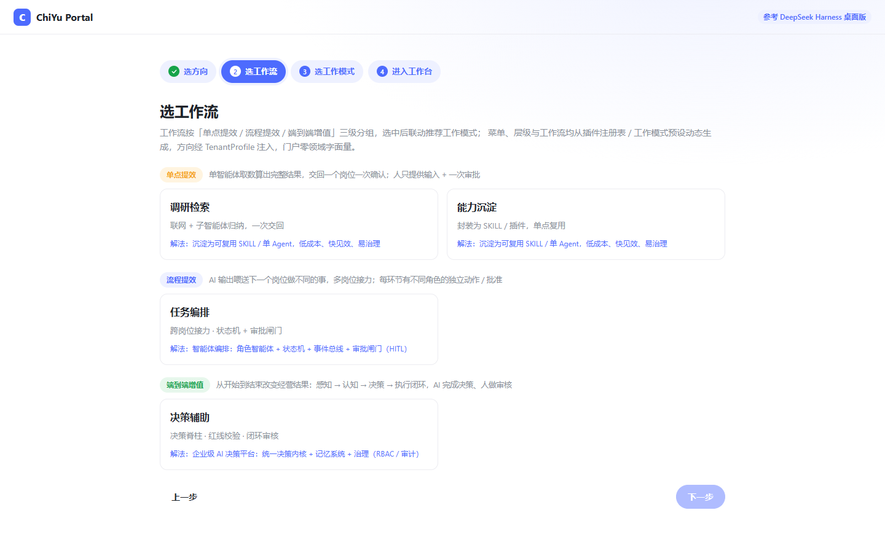
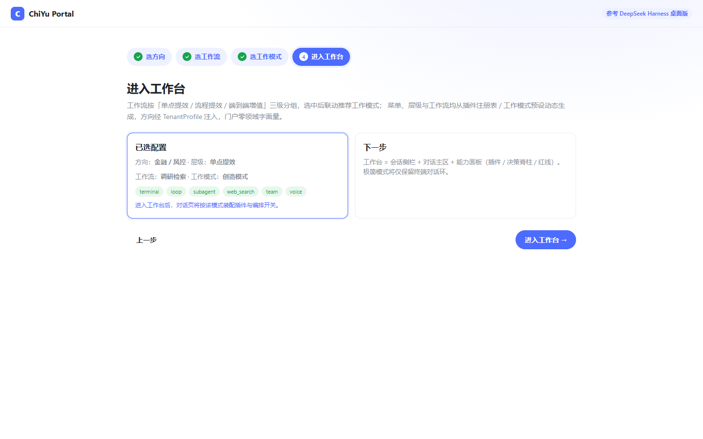
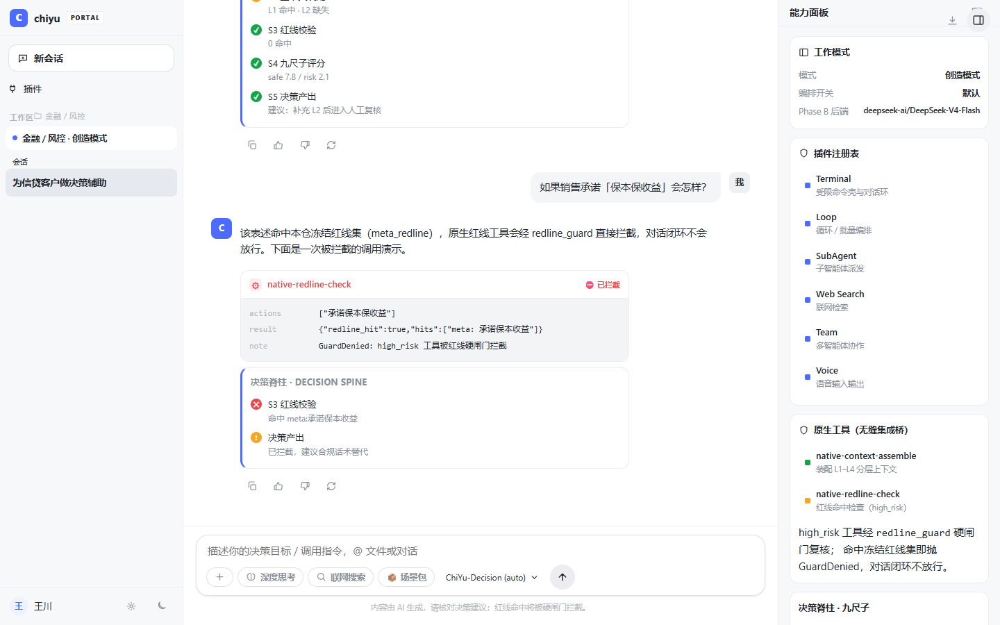
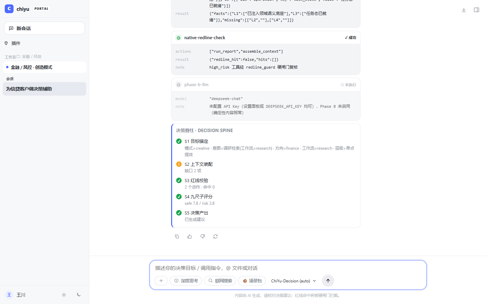

| 项目 | 内容 |
|---|---|
| 软件全称 | 青羽 AI 原生底座软件（ChiYu-Foundation） |
| 软件简称 | ChiYu-Foundation |
| 版本号 | V1.0 |
| 著作权人 | 北京青羽智行科技有限公司 |
| 编程语言 | Python 3.11–3.13（主体）、TypeScript / TSX（门户前端）、SQL |
| 源程序量 | 13,590 行（四个在研包主源码，不含测试与构建产物） |
| 运行环境 | Linux 或 Windows；PostgreSQL 16 + pgvector（可选，缺省内存态运行） |
| 文档版本 | V1.0 编制日期：2026 年 10 月 |
文档用途。本手册是青羽 AI 原生底座软件的用户手册，用于描述软件的内容、组成、 设计、功能规格、开发情况、测试方法与使用方法，供计算机软件著作权登记作为文档鉴别材料提交， 同时作为使用方接入、运维与二次开发的正式参考依据。
读者对象。本手册面向三类读者：一是将本软件作为底座接入自有业务的开发工程师， 需要了解门面调用、契约注入与接入纪律；二是负责部署与运维的工程师，需要了解安装自检、 健康检查、守卫工具链与故障处理；三是需要评审本软件能力边界与治理机制的技术负责人， 需要了解分层架构、决策脊柱、审批三态与红线纪律。
文档结构。第一至三章介绍软件定位、运行环境与快速上手；第四至六章说明契约配置、 数据向量检索与决策脊柱三块核心能力；第七至九章覆盖门户运行时、插件工作模式与模型接入； 第十至十三章为集成指南、运维故障、应用示例与常见问题；附录 A 至 D 为接口清单、参数一览、 文档说明与术语索引；附录 E 逐项给出全部功能模块的运行界面与操作步骤。
配套材料。本手册中的界面截图均取自软件真实运行环境，命令行输出为实际执行结果，
对应原始文本留存于同目录 terminal-output/ 下，可逐份复核；源程序鉴别材料见
source-material.pdf，功能与技术特点说明见 software-functions.txt
与 software-techfeatures.txt。
阅读建议。首次接触本软件的使用方，建议按第三章快速上手实际操作一遍，再回到第四章 了解契约注入；仅需接入能力而不改造底座的工程师，可重点阅读第五章、第六章与附录 A；负责评审 能力边界的技术负责人，建议先读第一章的定位说明与第九章的能力状态声明，其中明确标注了尚处于 实验态、未纳入稳定承诺的能力范围。
术语与约定。本手册中"底座"专指本软件；"消费方"指安装并调用本软件的上层业务项目； "门面"指对外暴露的稳定导入面；"红线"指禁止自主放行、必须强制改判的事项目录。手册正文中以 等宽字体表示的是命令、接口名、字段键与文件路径，以加粗表示的是需要特别遵守的纪律条目。
青羽 AI 原生底座软件（英文简称 ChiYu-Foundation，以下简称"本软件"或"底座"）是一套面向 AI 原生应用开发的 公共能力底座。它的目标不是解决某一个具体行业的业务问题，而是把 AI 原生应用开发中最容易重复投入、 最容易做错的那部分能力——决策契约、数据存储、向量检索、上下文装配、动作编排、决策脊柱、门户生成—— 沉淀为可安装、可复用、可验证的软件包。
底座采用"一次做成、多次复用"的开发范式：任何一个新的业务项目接入本软件后，不必再从零构建知识建模、 本地模型接入、粒子数据设计、离线向量栈与决策链路，而只需注入本行业的取值（业务实体类型、知识谓词、 红线事项目录、评分权重），即可获得一套结构完整、边界清晰、行为可验证的 AI 原生运行时。
本软件以 Python 为开发语言，采用严格的分层架构，对外提供稳定的门面接口。软件既可独立作为命令行 工具与门户运行，也可作为软件包被其它项目安装引用。
官方定位：为其它项目提供公共能力，提供其它项目支撑与运行的底座；通过专业的封装与专业能力， 为其它项目提供高效、快速、专业的支持。
本软件的适用场景包括：
本软件不适用于以下情形：直接面向最终用户的成品业务系统（本软件是底座而非成品）； 需要开箱即用的图形化业务应用（业务页面需由接入方按自身流程定义）。
本软件在纵向上划分为四层，层与层之间为单向依赖，且下层不感知上层的业务含义：
| 层级 | 软件包 | 职责 |
|---|---|---|
| L0 契约层 L1 基础设施层 | chiyu-kernel |
声明形态与契约：契约常量、粒子模型、向量存储、本体、上下文装配、动作、事件、审计、 会话、插件、模型接入、协议适配、质量守卫。 |
| L2 决策层 | chiyu-decision |
决策脊柱运行时、评分量规、红线判定、自主放行闸门、三态审批与续跑。 |
| L3 门户层 | chiyu-portal |
自然语言到页面的解析与守卫、页面渲染、页面存储、引导式导航。 |
| 运行入口 | chiyu-cli |
命令行入口：决策执行、门户渲染、工作模式查询、包内自测、自检与受限命令壳。 |
其中 L3 门户层为可选安装。不安装门户层时，L0 至 L2 的契约、检索与决策能力保持完整可用， 适合以接口方式嵌入到既有系统；安装门户层后，可获得自然语言驱动的页面生成与引导式工作台。
在横向上，本软件对外暴露的能力被登记为一份机器可读的能力清单，共 29 项，覆盖契约、向量、本体、 上下文、动作、域、持久化、审批、图、协议服务、探针、编排、演化、事件、审计、模型接入、插件、 会话、工具、技能、计划、协议桥接、钩子、交互、工作流、场景、存储、决策、记忆等能力域。每一项能力 标注其状态（稳定或实验），供接入方判断哪些能力可以写入生产验收判据。
| 术语 | 含义 |
|---|---|
| 底座 / 内核 | 本软件本身；被其它业务项目引用以支撑其运行。 |
| 接入方 / 消费方 | 安装并调用本软件的其它项目或团队。 |
| 门面（Facade） | 底座对外唯一合法的调用入口模块，其导出符号构成公开契约。 |
| 契约（Contract） | 跨模块共享的常量与形态定义，是版本管理的最小单位。 |
| 租户画像 | 描述一个接入方的配置集合，包含向量维度、知识谓词、红线事项、角色等。 |
| 粒子（Particle） | 底座的统一业务实体模型，客户、商机、事件等均以粒子表示。 |
| 本体 | 对业务实体的类型化描述及其受控关系的集合。 |
| 决策脊柱 | 从触发上下文到决策落库的固定六阶段执行链。 |
| 九尺子 | 对决策叙述质量打分的一组九项量规，各项 0 至 4 分。 |
| 红线 | 不可逾越的硬性约束；命中即屏蔽自主放行。 |
| 自主放行 | 在红线未命中且置信度达到阈值时，允许系统自动执行而不需人工审批。 |
| 三态 | 审批结论的待定、通过、驳回三种状态。 |
| 场景包 | 以配置形式声明的一组可复用的业务场景定义。 |
| 能力清单 | 底座对外能力的机器可读登记表，含能力标识、所属包、状态与验证入口。 |
| 项目 | 要求 |
|---|---|
| 处理器 | 通用 x86-64 或 ARM64 处理器；本地向量推理可在中央处理器上运行，无需图形处理器。 |
| 内存 | 建议 8 GB 以上；启用本地向量模型时建议 16 GB 以上。 |
| 存储 | 建议 20 GB 以上可用空间（含数据库与模型文件）。 |
| 网络 | 安装期需可访问软件包源；运行期可完全离线（本地向量与本地数据库模式下）。 |
| 项目 | 要求 |
|---|---|
| 操作系统 | Windows 11 或主流 Linux 发行版（两者均已验证）。 |
| Python | 3.11 至 3.13（含）。安装包声明 requires-python = ">=3.11,<3.14"。 |
| 数据库 | PostgreSQL 16 加向量扩展 pgvector（可选；不配置时以内存态运行，适合功能验证）。 |
| 必需依赖 | numpy、PyYAML、psycopg2-binary、pgvector。 |
| 可选依赖 | onnxruntime、tokenizers（启用本地离线向量推理）。 |
| 门户前端 | 现代浏览器（Chrome、Edge 等）；前端开发模式需 Node.js 22 与 Vite 5。 |
底座以 Python 安装包形式分发。在目标环境中执行：
# 安装内核与决策层（基础能力） pip install chiyu_kernel-0.1.0-py3-none-any.whl pip install chiyu_decision-0.1.0-py3-none-any.whl # 可选：安装门户运行时（自然语言页面生成） pip install chiyu_portal-0.1.0-py3-none-any.whl # 可选：启用本地离线向量推理 pip install "chiyu-kernel[cpu]"
若需在本地参与底座开发或调试，可从源代码以可编辑方式安装：
git clone <底座仓库地址> cd chiyu-foundation # 逐个包以可编辑方式安装 pip install -e packages/chiyu-kernel pip install -e packages/chiyu-decision pip install -e packages/chiyu-portal pip install -e packages/chiyu-cli # 安装开发依赖（含测试框架） pip install -e "packages/chiyu-kernel[dev]"
底座的向量存储以 PostgreSQL 加 pgvector 扩展作为唯一事实源。若仅做功能验证，可跳过本节直接使用内存态存储。 生产部署建议按下述步骤准备数据库。
-- 在目标数据库中启用向量扩展 CREATE EXTENSION IF NOT EXISTS vector; -- 校验扩展版本（建议 0.8 及以上） SELECT extname, extversion FROM pg_extension WHERE extname = 'vector';
底座通过环境变量读取数据库连接信息，不在代码中写死库名与角色：
| 环境变量 | 说明 |
|---|---|
CHIYU_DSN | 数据库连接串，形如 postgresql://<角色>:<口令>@<主机>:<端口>/<库名>。 |
CHIYU_SCHEMA | 表结构前缀（命名空间），由接入方指定。 |
CHIYU_TEST_DSN | 测试专用连接串；仅在测试上下文中生效。 |
底座提供表结构生成接口，依据接入方的向量维度与实体类型清单生成建表语句：
from chiyu_kernel.api import ddl_statements, vector_index_ddl
profile = {"vector_dim": 1024, "particle_types": ["ORDER", "DOC"]}
print(ddl_statements(profile)) # 建表语句
print(vector_index_ddl(profile)) # 向量索引语句
安装完成后，建议执行自检以确认环境可用。自检分为三步：
python -c "import chiyu_kernel, chiyu_decision, chiyu_portal; print('ok')"
若导入期抛出异常，通常表示版本不匹配或能力档位不足。底座会在导入期对版本、能力档位与符号缺失做 快速失败校验，错误信息中会指出缺失的能力名称，便于定位。
python -c "from chiyu_kernel.api import __version__, API_VERSION, capabilities; \ print(__version__, API_VERSION); print(capabilities()[:5])"
chiyu selftest # 运行底座自带测试 chiyu modes # 列出四种工作模式 # 一键健康检查（等价于逐包执行上述命令） chiyu selftest --all
pip install --upgrade chiyu_kernel-<新版本>.whl pip install --upgrade chiyu_decision-<新版本>.whl
底座遵循严格加法原则：已公开的符号在升级后仍然可用，不会因新增能力而破坏既有调用。若某个符号 计划移除，会先在版本中发出弃用告警，接入方在升级后可从运行日志中看到告警信息，据此安排改造， 并在下一个大版本前完成替换。
chiyu_modes 与能力查询命令的输出），
升级后比对差异。若发现任何已用能力的状态由稳定变为实验或消失，应回滚并联系底座维护方。
pip uninstall chiyu-cli chiyu-portal chiyu-decision chiyu-kernel
卸载软件包不会删除数据库中的业务数据。如需清理数据，请由数据库管理员按接入方的数据保留策略单独执行。
升级若发现问题需要回滚时，按以下顺序操作，避免出现「代码已回滚、数据未适配」的中间状态：
需要特别说明的是：向量数据与图关系数据不需要随软件版本回滚而清理。它们由写入时的契约保证 结构兼容，新增能力只会增加对既有数据的读取方式，不会改变既有数据的含义。若确需清理， 应由数据库管理员按接入方的数据保留策略单独执行，而不是由软件自动删除。
本章用一个最小可运行示例演示底座的完整使用方式：声明领域配置、注入取值、执行一次决策、读取结论。 示例代码不依赖数据库，可直接在安装完成后运行。
底座不携带任何具体行业的取值，使用前需要先声明"我是谁、我有哪些实体、我的硬性约束是什么"。这些信息 统一放在租户画像对象中：
from chiyu_kernel.contract import (
CORE_ROLES, ParticleTypeSet, RedlineSpec, TenantProfile,
)
profile = TenantProfile(
domain="demo", # 领域标识（必填，底座不提供默认值）
particle_types=ParticleTypeSet(
names=tuple(CORE_ROLES) + ("ORDER", "DOC"), # 内核通用角色 + 本域自有实体
),
redline=RedlineSpec(
mutex_top=frozenset(), # 仅禁止并入的事项
sensitive=frozenset({"口头承诺收益"}), # 需强制人工在环的事项
),
autonomous_threshold=0.79, # 自主放行阈值，取值区间 0 至 1
)
CORE_ROLES 给出）。
底座在构造画像时会校验这一点，若缺失会在创建对象时立即报错，提示缺失的角色名称，
从而避免"配置了但运行期不起作用"的隐性缺陷。
决策需要两组输入：决定叙述质量的九项评分，以及描述决策完备性的八项要素。
from chiyu_kernel.contract import EIGHT_ELEMENTS, RUBRIC_KEYS
# 九尺子评分：每项 0 至 4 分（0 缺失 / 1 弱 / 2 部分 / 3 良 / 4 充分）
rubric_scores = {k: 3 for k in RUBRIC_KEYS}
# 八要素：给出内容即视为齐备，缺项会被记录到结论的缺失清单中
elements = {k: "已填写" for k in EIGHT_ELEMENTS}
from chiyu_decision.api import run_spine
result = run_spine(
context={"event": "quote_submit", "stage": "quoted"}, # S1 触发上下文（不可为空）
profile=profile, # S1 本体分级来源
rubric_scores=rubric_scores, # S2 评分
elements=elements, # S2 要素
redline_items=tuple(profile.redline.sensitive), # S4 红线事项目录
threshold=profile.autonomous_threshold, # S4 自主放行阈值
)
print("决策编号：", result.decision_id)
print("到达阶段：", result.stage_reached)
print("综合置信度：", round(result.confidence, 4))
print("红线命中：", result.redline_hit, result.redline_reasons)
print("允许自主放行：", result.autonomous)
执行完成后返回的结论对象包含以下字段，接入方据此决定后续动作：
| 字段 | 含义 |
|---|---|
decision_id | 本次决策的唯一标识，可用于后续查询、审批与续跑。 |
stage_reached | 实际执行到的阶段。若因红线等原因提前终止，此处即为终止点。 |
confidence | 综合置信度，来源为九项评分的比值，不使用其它分数代替。 |
rubric_missing | 九项评分中缺失的项，空表示全部齐备。 |
elements_missing | 八项要素中缺失的项。 |
redline_hit / redline_reasons | 是否命中红线及命中原因清单。 |
autonomous | 是否允许自主放行。红线命中时恒为假。 |
persisted | 是否已完成落库。未提供落库回调时为假。 |
pending | 是否为待人工审批状态（三态中的待定）。 |
approval_rejected | 被驳回的原因（若有）。驳回为终态。 |
def save(r):
"""落库回调：把结论写入业务库，返回真值表示落库成功。"""
db.insert("decision_log", r.decision_id, r.confidence, r.autonomous)
return True
# 带落库回调执行
result = run_spine(..., persister=save)
# 若结论为待定（pending），人工批准后凭原裁定续跑
from chiyu_decision.api import resume_spine
if result.pending:
approved = resume_spine(result, persister=save, approval_ref="AP-2026-0001")
底座提供统一的命令行入口 chiyu，常用子命令如下：
| 命令 | 用途 |
|---|---|
chiyu modes | 列出四种工作模式及其启用的插件组合。 |
chiyu modes --mode ptc | 查看单个工作模式的详细定义。 |
chiyu decide --topic "…" | 执行一次决策脊柱（确定性分支，便于快速验证配置）。 |
chiyu decide --topic "…" --mode minimal | 指定工作模式执行决策。 |
chiyu portal render --nl "…" | 把一句自然语言渲染为页面。 |
chiyu portal onboarding | 生成引导式导航页（用于选择工作模式）。 |
chiyu evolution readiness | 平台自进化的开闸前置认证。 |
chiyu selftest | 运行包内自带测试，用于环境自检。 |
chiyu shell | 受限命令壳（标准与精简两种版本均提供）。 |
chiyu dev | 完整交互式解释环境（仅完整发行版提供）。 |
若已安装门户层，可按如下步骤启动可视化工作台。
# 在后端目录下启动接口服务 python -m uvicorn app:app --host 127.0.0.1 --port 8015
# 在前端目录下启动开发服务器（默认把 /api 代理到后端 8015 端口） npm run dev # 浏览器打开提示的地址即可进入引导页
| 现象 | 处理方式 |
|---|---|
| 导入时报版本或能力不匹配 | 按提示信息核对底座版本与所需能力档位，必要时升级到满足要求的版本。 |
| 决策执行抛出引擎故障 | 检查触发上下文是否为空。上下文为空属于顺序性错误，底座会直接拒绝执行。 |
| 置信度偏低导致不放行 | 检查九项评分是否偏低或存在缺项；补齐要素与评分后重试。 |
| 决策全部被送人工审批 | 检查红线事项目录是否配置过宽，把本应属于"仅禁止并入"的事项放进了强制人工档。 |
| 接入方无法导入某个符号 | 该符号不属于公开门面。请改用门面中提供的能力，或在能力清单中确认其归属。 |
遇到异常时，按以下顺序排查可以覆盖绝大多数情况，且每一步都有对应的可观测信息， 无需依赖经验猜测：
上述五步的顺序遵循「先排除配置与版本，再检查数据，最后看实现」的原则。实践中， 把顺序倒过来（先怀疑实现）往往会把大量时间花在本可通过一步核对解决的问题上。
租户画像（TenantProfile）是接入方把自己的业务取值注入底座的唯一通道。底座的契约层只声明形态， 所有具体取值都通过画像传入，因此同一份底座代码可以同时服务多个不同领域。
| 字段 | 必填 | 说明 |
|---|---|---|
domain | 是 | 领域标识。底座不提供默认领域，缺失即报错。 |
particle_types | 是 | 本领域全部实体类型集合，必须包含内核通用角色。 |
predicates | 否 | 实体间受控关系（谓词）集合。谓词两端的类型必须落在实体类型集合内。 |
redline | 否 | 红线规格，见下节。 |
rubric_thresholds | 否 | 评分阈值，缺省为良 0.75、警告 0.5。 |
autonomous_threshold | 否 | 自主放行阈值，缺省 0.79，取值范围 0 至 1。 |
extras | 否 | 接入方自定义的扩展字段，底座不解释其含义。 |
画像对象在创建时即完成校验，任何不合规的配置都会立即失败，而不是留到运行期才发现：
红线规格把硬性约束区分为两档，这两档的处理方式完全不同，务必分开配置：
| 档位 | 字段 | 语义与处理 |
|---|---|---|
| 仅禁止并入 | mutex_top | 表示"不属于同一群体"，直接阻断合并或并入动作， 不需要人工介入。 |
| 强制人工在环 | sensitive | 表示涉及责任主体冲突或跨敏感边界， 必须转人工审批后方可继续。 |
红线命中后的处理原则是"优先于其它一切判定"：无论置信度多高，只要命中红线，自主放行即被屏蔽， 结论被强制改判为驳回，并留下审计记录。
除画像之外，接入方还可以为每一个决策场景声明其输入输出契约，用于在注册期就发现配置错误， 而不是等到运行期收到难以理解的数据缺失报错。
单条输入输出声明的构成如下：
| 字段 | 说明 |
|---|---|
name | 字段名，采用短横线分隔的命名格式（与场景键格式一致）。 |
kind | 字段形态，必须属于固定闭集，见下表。 |
required | 是否必需。为假时，缺少供给允许走降级路径。 |
description | 面向人的说明，只描述功能语义。 |
| 形态 | 含义 |
|---|---|
particle | 消耗或产出的业务实体。 |
asset | 场景包中的资产，例如规则挂点。 |
context | 决策触发上下文的键。 |
event | 产出的事件。 |
graph-edge | 产出的知识或记忆边。 |
场景可声明其必经的闸门。闸名同样属于固定闭集，只有"红线"与"审批"两种，接入方不得自造闸名。 所有声明在注册期完成校验，不合法立即失败。
场景包是把一组业务场景定义以配置形式打包复用的载体。它的价值在于：同一份底座可以按不同的场景 组合装配，而无需修改底座代码。
from chiyu_kernel.api import register_scenario, require_scenario, list_scenarios
# 注册一个决策场景（注册期校验键格式、I/O 契约与闸名）
register_scenario(DecisionScenarioProfile(
scenario_id="quote-approval",
inputs=(DecisionIOField(name="deal-id", kind="particle"),),
outputs=(DecisionIOField(name="approval-record", kind="particle"),),
required_gates=("redline", "approval"),
))
# 取用：未注册的键会立即报错，不做静默兜底
scenario = require_scenario("quote-approval")
print(list_scenarios())
场景键的命名格式是可插拨的策略：默认采用短横线分隔格式（如 quote-approval），
适合单一语言的接入方；对于需要跨语言协作的接入方，可切换为不做格式约束的策略，
由其自行保证命名族的统一。
粒子是底座对业务实体的统一抽象。无论是客户、订单、单据还是事件，在底座内部都以粒子表示， 其类型由接入方在画像中声明。粒子模型的价值在于：底座的检索、图谱、上下文与决策能力只需 面向一种数据形态实现，接入方新增业务实体时不需要改动底座代码。
| 字段 | 说明 |
|---|---|
| 标识 | 全局唯一标识。 |
| 类型 | 实体类型，取值来自画像声明的类型集合。 |
| 短名 | 便于阅读的短标识。 |
| 标题 | 面向人的名称。 |
| 状态 | 实体生命周期状态。 |
| 载荷 | 结构化业务数据。 |
| 向量 | 用于语义检索的向量表示。 |
| 全文索引 | 用于关键词检索的文本索引。 |
粒子写入时，底座会自动完成三项处理，保证后续检索与图谱能力可直接使用：
这三项处理构成了写入侧的钩子链，接入方无需在业务代码中重复实现。
本体是对实体类型的类型化描述与受控关系的集合。关系只能使用画像声明的谓词， 使用未声明的谓词会被直接拒绝，而不是静默返回空结果。这一设计保证了图谱数据的可控性： 任何一条边都是经过声明的。
底座的向量推理在本地完成，基于 ONNX 运行时执行，不依赖重量级深度学习框架。这意味着： 部署包体积小、启动快；在无图形处理器的普通服务器上也能运行；数据不出本地环境。 安装可选依赖后即可启用：
pip install "chiyu-kernel[cpu]"
启用后可使用向量计算能力：
from chiyu_kernel.api import OnnxRunner, cosine, content_hash
runner = OnnxRunner(model_path="模型文件路径")
v1 = runner.encode("第一段文本")
v2 = runner.encode("第二段文本")
print("相似度：", cosine(v1, v2))
print("内容指纹：", content_hash("第一段文本")) # 用于判定内容是否变化，决定是否重算向量
向量统一落 PostgreSQL 加向量扩展，作为唯一事实源。底座不提供第二种向量持久化实现， 以避免出现"两处存储互不同步"的问题。
from chiyu_kernel.api import open_store, vec_to_pg, pad_to_dim store = open_store(dsn="postgresql://…", schema="app") store.upsert(particle_vectors) hits = store.search(query_vector, top_k=10)
写入向量前，底座会做维度对齐处理（pad_to_dim）并校验维度是否符合画像声明。
维度不符时必须显式报错并留痕，禁止写入空值后静默降级，否则会造成检索结果不可解释。
为便于运维，底座提供向量覆盖度统计与回填计划生成能力：
| 能力 | 用途 |
|---|---|
| 覆盖度计算 | 统计已有向量与全部实体的比例，用于判断检索可信度。 |
| 回填计划 | 生成待补向量的清单，按批次回填，避免一次性全量重算。 |
| 回填通道 | 按批次执行回填，支持中断续跑。 |
决策质量高度依赖触发时装配进来的上下文。底座把上下文按四个层次组织，形成从"当前事件"到 "历史经验"的完整供给：
| 层次 | 内容 |
|---|---|
| L1 | 本次触发所直接涉及的事实与实体。 |
| L2 | 与当前事实相关的语义召回结果。 |
| L3 | 历史相似决策与先例。 |
| L4 | 长期知识与规则依据。 |
当某一层的供给不足时（例如历史先例过少、向量覆盖不全），底座不返回空结果，而是按既定的三级 降级路径取数，并在结论中留下痕迹，使调用方能够知道"这次决策的上下文是完整的还是降级的"。
from chiyu_kernel.api import (
assemble, degraded_recall, check_supply_demand, build_knowledge_needs,
)
needs = build_knowledge_needs(...) # 需求侧：按场景声明所需的层与维度
result = assemble(needs, provided) # 供给侧：按层提供可用内容
print(result.facts) # 装配出的上下文事实
print(result.supply_report) # 结构化缺口报告（不吞不糊）
hits = degraded_recall(("关键词",), pool, top_k=10) # 三级降级召回
gaps = check_supply_demand(needs, supply) # 供需一致性校验
print(gaps) # 缺口清单（如某层缺失实体数）
底座提供统一的图存储协议，并给出内存实现与基于递归查询的数据库实现两种。接入方在开发与测试时 可使用内存实现，在生产环境使用数据库实现，两者的语义保持一致。
| 算子 | 说明 |
|---|---|
| 受控谓词集 | 返回当前允许使用的谓词集合；请求未受控谓词时直接拒绝。 |
| 出入边查询 | 查询某节点的一跳出边或入边，可按谓词过滤。 |
| 多跳遍历 | 按谓词与跳数遍历，含深度上限与环检测。 |
| 关系图谱视图 | 生成一跳或二跳邻域以及路径的视图。 |
| 时间线视图 | 按决策时间基准聚合多个来源的事件，形成时间线。 |
| 决策回链 | 查询某条决策被谁引用、覆盖了谁、源自哪条例外。 |
from chiyu_kernel.api import relation_view, timeline_view, decision_backlinks print(relation_view(store, root="ORDER-1001", hops=2)) print(timeline_view(store, entity="ORDER-1001")) print(decision_backlinks(store, decision_id="D-2026-0001"))
决策脊柱是底座的核心运行机制。它把"从接收到一个触发，到产出一条可落库的决策"的过程固定为 六个阶段，且顺序不可调整。
| 阶段 | 名称 | 职责 |
|---|---|---|
| S1_context | 接收触发上下文 | 接收本次决策的触发上下文。该阶段先于其它一切， 上下文为空时直接拒绝执行。 |
| S1_derive | 本体分级 | 依据画像对本体的分级信息做派生处理。 |
| S2_score | 评分 | 八要素齐备性检查与九尺子评分，两项同时进行。 |
| S3_aggregate | 加权聚合 | 按外置的权重配置聚合出综合置信度。 |
| S4_redline | 红线硬判定与自主放行 | 位于链路末端的硬闸门，先判红线， 再按阈值判定是否允许自主放行。 |
| S5_persist | 决策落库 | 把结论写入业务库，供后续审计、审批与续跑使用。 |
顺序之所以被提升为契约而非实现细节，因为它直接决定结论的正确性。历史上曾出现过两类因顺序 错置而产生的缺陷：
因此底座把顺序声明为契约常量，并在每次执行前做一致性校验。任何接入方都不得以"性能优化"为 理由调整阶段顺序；若校验失败，执行会立即中断。
九尺子用于评价决策叙述本身的质量，每项取值 0 至 4 分，含义依次为：缺失、弱、部分、良、充分。
| 项目 | 英文键 | 评价内容 |
|---|---|---|
| 清晰性 | clarity | 表述是否清楚、无歧义。 |
| 准确性 | accuracy | 论断是否有事实依据。 |
| 精确性 | precision | 表述是否具体、可执行。 |
| 相关性 | relevance | 是否切合当前决策目标。 |
| 深度 | depth | 是否触及问题的关键层。 |
| 广度 | breadth | 是否考虑了足够多的相关方面。 |
| 逻辑性 | logic | 推理链条是否成立。 |
| 重要性 | importance | 是否聚焦真正重要的因素。 |
| 公平性 | fairness | 是否对不同意见给出同等对待。 |
八要素描述一条决策陈述在结构上是否完整：
| 要素 | 英文键 | 含义 |
|---|---|---|
| 意图 | intent | 本次决策要达成什么。 |
| 假设 | assumptions | 所依赖的前提。 |
| 推理 | inference | 从前提得出结论的过程。 |
| 观点 | viewpoints | 相关各方的立场。 |
| 影响 | impact | 决策带来的后果。 |
| 风险登记 | risk_register | 已识别的风险。 |
| 止损 | stop_loss | 触发退出的条件。 |
| 概念引用 | concept_refs | 所依据的知识条目引用。 |
综合置信度只允许取自九尺子的评分比值（即九项的达成比例），不允许用其它分数替代。这一约束 保证置信度的含义始终唯一：它衡量的是决策叙述的完备程度。默认阈值配置为良 0.75、警告 0.5， 可由画像覆盖。
from chiyu_decision.api import score_rubric, check_elements, aggregate_confidence report = score_rubric(rubric_scores) # 返回评分报告 print(report.ratio) # 达成比例（置信度来源） print(aggregate_confidence(report)) # 聚合置信度 elem = check_elements(elements) # 返回要素齐备性报告 print(elem.missing) # 缺失要素清单
红线是决策链路上的硬性约束。判定时逐条检查上下文中是否出现红线事项，返回命中结果与命中原因清单：
from chiyu_decision.api import evaluate_redline verdict = evaluate_redline(context=ctx, redline_items=tuple(profile.redline.sensitive)) print(verdict.hit, verdict.reasons)
红线判定的两条纪律：
自主放行闸门位于链路末端，用于决定"这条决策能否不经人工审批直接执行"。其判据是一条完整的 逻辑判断，而非其中一半：
autonomous = (not redline_hit) and (confidence >= threshold)
| 情景 | 结果 |
|---|---|
| 命中红线，置信度很高 | 不放行（红线优先）。 |
| 未命中红线，置信度低于阈值 | 不放行，转人工审批（待定态）。 |
| 未命中红线，置信度达到阈值 | 允许放行，进入落库阶段。 |
| 状态 | 触发条件 | 处理 |
|---|---|---|
| 待定（PENDING） | 未达自主放行阈值 | 不落正向结论，等待人工审批； 审计中记录待审批事件。 |
| 通过（APPROVED） | 达到阈值，或人工批准 | 落库。 |
| 驳回（REJECTED） | 命中红线，或人工驳回 | 不落库，记录驳回原因；为终态。 |
待定结论在人工批准后，通过续跑接口补做落库阶段。续跑遵循以下纪律：
from chiyu_decision.api import resume_spine resumed = resume_spine(result, persister=save, approval_ref="AP-2026-0001") assert resumed.persisted
决策过程中的失败以结构化错误抛出，错误码为固定闭集，供调用方做机器路由。请按错误码分支处理， 不要按错误文案做字符串匹配。
| 错误码 | 含义与处理建议 |
|---|---|
ENGINE_FAULT | 脊柱内部不变量被破坏，例如上下文为空、阶段顺序被重排、 终态结论被尝试复活。属于实现或调用错误，需修复后重试。 |
UNKNOWN_SCENARIO | 决策场景未登记。检查场景是否已注册、键名是否正确。 |
DIM_MISMATCH | 向量维度与画像声明不一致。检查模型维度与画像配置。 |
CONTRACT_VIOLATION | 输入不合法。按失败即拒绝的原则处理，不要降级重试。 |
from chiyu_decision.api import DecisionError, DECISION_ERROR_CODES
try:
run_spine(...)
except DecisionError as e:
if e.code == "UNKNOWN_SCENARIO":
auto_register(e.message)
else:
raise
错误处理约定。上例给出的是推荐的处理范式，其中包含两条需要遵守的约定：
错误码是固定闭集，新增错误码属于契约变更。接入方按错误码分支处理可保证在底座升级后 不需要修改处理逻辑；反之，若按错误文本分支，任何措辞调整都会导致接入方逻辑失效。
门户层提供把一句自然语言转成可交互页面的能力，使不具备前端开发经验的使用者也能生成业务视图。 该能力分两步：先做输入守卫，再做结构解析。
守卫环节对输入做合法性与安全性检查，返回是否放行以及原因。被拒绝的输入不会进入解析环节：
from chiyu_portal.api import guard_nl_input
g = guard_nl_input("列出本月逾期未回款的订单，按金额降序")
print(g.allowed, g.reason)
解析环节把自然语言转成页面描述对象，并对描述做合法性校验：
from chiyu_portal.api import parse_nl_to_schema, validate_page_schema
parsed = parse_nl_to_schema("列出本月逾期未回款的订单，按金额降序")
schema = parsed.schema
validate_page_schema(schema) # 不合法立即失败
print(schema.page_type, schema.components)
| 项目 | 内容 |
|---|---|
| 页面类型 | 由页面类型闭集给出，覆盖列表、详情、看板等常见视图。 |
| 组件种类 | 由组件种类闭集给出，覆盖字段、表格、指标条、管道、进度卡等。 |
| 过滤算子 | 由算子闭集给出，用于生成筛选条件。 |
| 聚合函数 | 由聚合函数闭集给出，用于生成统计口径。 |
| 主题 | 由主题闭集给出，用于统一外观。 |
from chiyu_portal.api import render_page, render_conversation html_page = render_page(schema) # 渲染为页面 html_talk = render_conversation(messages=history) # 渲染会话记录
渲染结果为自包含的网页内容，可直接嵌入既有系统，或由门户工作台直接展示。
生成的页面可以保存为草稿并复用：
from chiyu_portal.api import PageStore, PageDraft store = PageStore() draft = PageDraft(title="逾期回款看板", schema=schema) store.save(draft) print(store.list())
引导式导航用于在首次使用时把使用者带入合适的配置组合。它由四组卡片构成，卡片内容由底座动态生成：
| 卡片组 | 作用 |
|---|---|
| 方向卡片 | 选择业务方向，决定后续推荐的工作流与工作模式。 |
| 层级卡片 | 按难度分级给出候选工作流，并说明每个分级的适用判据与解法。 |
| 工作流卡片 | 给出该分级下的具体工作流选项。 |
| 模式卡片 | 给出四种工作模式及其插件组合，并标注默认项。 |
from chiyu_portal.api import render_onboarding, onboarding_steps print(onboarding_steps()) # 引导步骤 page = render_onboarding() # 渲染完整引导页
以下为门户运行时的界面示例，均取自真实运行环境。引导式导航共四步，依次为：选择业务方向、 选择工作流分级、选择工作模式、确认进入工作台。
界面构成。门户首页为引导式导航，自上而下依次为品牌标识区、软件名标题、以及业务方向选择区。 方向选项并非写死在页面中，而是由租户画像注入：画像声明了哪些方向，页面就呈现哪些方向， 门户层本身不含任何具体业务用语。页面底部为步骤指示，标明当前处于四步引导的哪一步。
操作说明。点击任一方向卡片即选中该方向并进入下一步；此时页面会按所选方向过滤可用的 工作流与工作模式。若租户画像未配置任何方向，页面会给出空状态提示，而不是展示空白或默认值。
相关配置项。方向列表由租户画像的配置项决定，配置中声明几个方向， 页面即呈现几项；方向名称建议使用中性表述，不写具体行业名词，以便同一套界面跨领域复用。
操作步骤。① 启动门户后端与前端服务，在浏览器中打开门户地址，等待引导页加载完成； ② 在方向选择区点击目标方向卡片；③ 观察页面进入下一步，且后续可选项已按所选方向过滤。
可核对要点。一是方向选项内容与租户画像配置完全一致，界面上不出现画像未声明的方向； 二是页面中不出现任何具体行业的业务用语，方向以抽象名称呈现，验证门户层与业务取值的分离； 三是底部步骤指示与当前步骤一致，四步引导的顺序不可跳过。
界面构成。第二步为工作流与难度分级选择。每个工作流卡片标注名称与适用任务类型， 并按难度分级（由浅入深）给出说明文本，便于使用方按任务复杂度选择。
操作说明。选择工作流后，该选择会随会话一起提交，影响后续决策脊柱的评分侧重与 上下文装配的取数范围；如需更换，可返回上一步重新选择。选中项在确认页会再次汇总展示， 避免误选。

相关配置项。工作流与其难度分级来自工作流配置；如需增加新的工作流， 在配置中追加条目即可，分级字段决定其在界面上的排列位置，无需改动前端代码。
操作步骤。① 在方向选定后进入本步；② 阅读各工作流的难度分级说明， 点击符合任务复杂度的工作流；③ 进入下一步，确认所选工作流已随会话提交。
可核对要点。一是同一方向下的工作流选项按难度由浅入深排列，分级说明文字与选项对应； 二是选择结果会传递到确认页，中途返回修改不会残留上一次的选择；三是未选择任何工作流时 无法进入下一步，页面给出明确提示而不是默认选中第一项。
界面构成。第三步为工作模式选择。每个模式卡片右侧列出该模式启用的插件组合， 组合内容由插件注册表动态生成，与软件内置的六类插件一一对应。页面上可直观看到不同模式之间的 能力差异，例如标准模式启用全部插件，程序化工具模式偏向工具调用与自动化。
操作说明。选择模式即选定本次会话所启用的能力集合；确认后该模式写入会话上下文， 并在工作台的能力面板中持续可见。模式选择与插件组合的对应关系可随时在能力面板中复核。

相关配置项。工作模式及其插件组合来自模式预设与插件注册表两处配置： 模式预设定义模式的名称与默认项，插件注册表定义每个插件在各模式下的启用状态。
操作步骤。① 在工作流选定后进入本步；② 对照各模式右侧的插件组合， 点击目标工作模式卡片；③ 进入确认页，核对所选模式与插件组合。
可核对要点。一是每个模式右侧的插件组合与插件注册表中的登记一致； 二是不同模式的组合存在可辨识的差异，标准模式启用全部插件，专业化模式有所取舍； 三是默认模式有显式标注，避免使用方在未理解差异的情况下误选。
界面构成。第四步为确认页，汇总展示前三步所选的方向、工作流与工作模式， 并提供返回修改入口与确认进入按钮。
操作说明。核对无误后点击确认即进入对话工作台，所选配置写入会话初始上下文， 后续所有轮次的决策都在该配置下执行；如发现任一项选择有误，可返回对应步骤重新选择。 确认页的设计意图是让配置在会话建立前可见、可改，避免配置在对话中途被隐式改变。

相关配置项。确认页提交的三项选择会写入会话初始上下文， 后续所有轮次的处理都在该上下文中进行；会话上下文在会话存续期内保持不变。
操作步骤。① 核对确认页汇总的三项选择（方向、工作流、工作模式）； ② 如需修改，点击返回并重新选择；③ 确认无误后提交，进入对话工作台。
可核对要点。一是确认页汇总的三项选择与前序步骤一致，不存在展示值与实际提交值不同 的情况；二是提供返回修改入口，且返回后前序选择被保留而非重置；三是确认动作才会建立会话， 未确认时不产生任何会话记录。
界面构成。对话工作台分三栏：左栏为会话栏，含「新会话」入口与历史会话列表； 中栏为对话主区，顶部展示软件名与当前方向、工作流，中部为空态欢迎区，底部为输入区； 右栏为能力面板入口，点击后展开当前模式的能力清单。
操作说明。在底部输入框输入决策目标或调用指令后回车即可发起一次决策；输入区左侧的 功能开关可开启深度思考与检索增强，右侧为模型选择器，显示当前采用的模型档位。主区会依次呈现 内核处理过程与结论，并附工具调用回执。

相关配置项。输入区的功能开关与模型选择器对应请求级的执行参数， 可逐次调整而不影响会话级配置；会话级配置（方向、工作流、模式）只在引导阶段设定。
操作步骤。① 在底部输入区描述决策目标或调用指令；② 按需切换检索增强、深度思考等开关 并选择模型档位；③ 提交后观察对话主区依次呈现处理过程与结论。
可核对要点。一是三栏各自职责清晰：左栏管会话、中栏管对话、右栏管能力查看； 二是输入区的功能开关处于可辨识的开关状态，而不是仅以图标形状表示， 避免使用方误判本次请求的执行方式；三是页面底部标注内容来源与核对提示。
界面构成。能力面板自上而下分为四块：当前工作模式、插件注册表、原生工具清单、 决策脊柱评分细则。插件注册表逐项列出插件标识与状态；原生工具清单列出可被调用的工具及其用途， 其中包含红线硬闸工具；评分细则列出决策脊柱所用的九个评分维度及其含义。
操作说明。能力面板为只读视图，用于在使用过程中随时核对「当前会话究竟启用了哪些能力」。 当决策结论与预期不符时，可先在此确认模式与插件组合是否正确，再检查评分是否存在缺项。

相关配置项。能力面板展示的内容由登记表驱动：插件来自插件注册表， 原生工具来自决策层工具清单，评分细则来自评分量规，三者均随版本发布同步更新。
操作步骤。① 点击工作台右侧的能力面板入口；② 自上而下查看当前工作模式、 插件注册表、原生工具与决策脊柱评分细则；③ 核对完毕后关闭面板返回对话。
可核对要点。一是面板列出的工作模式与当前会话实际使用的模式一致； 二是插件注册表逐项给出启用状态，不存在「列了但实际未启用」的模糊项； 三是决策脊柱评分细则完整列出九个维度，与第六章所述一致。
界面构成。对话主区在发起决策后逐条渲染内核返回的处理结果，包括：工具调用卡片 （标注工具名、执行状态与返回摘要）、决策脊柱的阶段轨迹（逐阶段标注完成状态与关键取值）、 以及最终结论。消息下方为复制、评价与重新生成等操作按钮。
操作说明。工具调用卡片中的状态标识可直接判断某项能力是否真正参与本次决策； 阶段轨迹中的每一行都对应一次真实的内部处理，未执行的阶段会明确标注为未执行， 而不是省略不显示。结论与阶段轨迹同屏呈现，便于核对结论的推导依据。

相关配置项。工具调用的可用范围取决于当前工作模式所启用的插件组合； 评分取值取决于评分量规与本次请求给出的评分输入。调整配置后重新发起决策即可观察到差异。
操作步骤。① 发起一次决策；② 阅读工具调用卡片，确认各工具的执行状态； ③ 沿阶段轨迹逐项核对关键取值，并与最终结论对照。
可核对要点。一是工具调用卡片标注了执行状态，成功与未执行有明确区分； 二是阶段轨迹逐项对应内部处理步骤，未执行的步骤如实标注而不是省略； 三是结论与轨迹同屏，可由轨迹复核结论的由来，而不是只给一个结论。
决策执行中的常见现象与解释。使用方在观察处理轨迹时，可能遇到下列情形， 均可由轨迹本身解释，无需解读为异常：
决策执行的三条纪律。上述现象的解读方式，来自三条贯穿始终的纪律， 使用方在自行扩展功能时同样应遵守：
导出页面的前置条件。对话可被导出为页面，前提是本次对话已经产生可渲染的内容。 若对话尚未包含任何工具调用回执或阶段轨迹，导出入口会提示内容不足，而不是产出一个空页面。 导出过程不修改原对话记录，导出产物是对话内容在该时刻的一份快照： 后续对原对话的继续操作不会改变已导出的页面，这一点便于将导出结果作为交付材料固定下来。
这三条纪律与第六章所述的阶段契约是同一套约束在不同层面的表述：契约规定「按什么顺序做」， 纪律规定「做完之后留下什么」。两者共同保证了结论的可解释性。
本章后续图面按门户的实际使用顺序排列：先引导式导航四步，再对话工作台，最后是能力面板与 一次完整的决策执行。阅读时建议按以下三个层次对照：
本章及附录 E 中的全部图面，均按下列方式取得，以保证图面内容与软件实际行为一致：
门户界面上的可见元素，均可追溯到某项配置，这使界面可以被逐项解释而不会出现「不知道为什么 这里显示这个」的情况。对应关系如下：
理解这层对应关系之后，使用方在遇到界面显示与预期不符时，可以直接定位到相应配置去核查， 而不必从前端代码入手排查。这也是本软件把配置集中管理、把界面保持为纯呈现层的直接收益。
本章的界面示例与第三章的快速上手、附录 E 的功能说明构成互补关系：第三章说明「怎样跑通一遍」， 本章说明「界面由哪些部分构成」，附录 E 则按功能项逐项给出操作步骤与真实输出。 三者描述的软件行为完全一致，区别只在于组织方式，使用方可按需选择入口。
界面上的文字分为三类，含义各不相同，阅读示例图时可按下列约定理解：
底座采用"一切皆插件"的装配思路：能力以插件形式声明为若干能力槽位的组合，由注册表统一登记、 发现与校验。插件本身只声明能力槽位，不携带任何业务用语。
每个插件声明的能力槽位包括：实体类型、动作、页面类型、工具、编排钩子、输入适配器。
| 插件 | 说明 |
|---|---|
| Terminal | 受限命令执行与对话环，是各工作模式的共同基础。 |
| Loop | 循环与批量编排。 |
| SubAgent | 子智能体派发。 |
| Web Search | 联网检索。 |
| Team | 多智能体协作。 |
| Voice | 语音输入输出。 |
| 模式 | 启用插件 | 特点 |
|---|---|---|
| 标准模式 | 终端、循环、子智能体、联网检索、团队协作 | 默认模式，门户与导航全开， 适合日常使用。 |
| 程序化工具调用模式 | 终端、循环、联网检索 | 开放脚本编排槽位， 适合需要把多步操作脚本化的场景。 |
| 精简模式 | 终端 | 隐藏门户与导航，只保留命令壳与受限对话环， 适合最小化心智负担与资源占用。 |
| 创造模式 | 全部插件（含语音） | 开放自定义插件注册与模式声明， 适合扩展与实验。 |
from chiyu_kernel.api import resolve_work_mode, MODE_PRESETS
print(list(MODE_PRESETS))
mode = resolve_work_mode("ptc")
print(mode.plugins)
底座以事件总线驱动能力之间的联动。业务动作产生事件，看板、告警、统计等能力订阅事件并作出响应， 避免在业务代码中直接调用横切能力。
审批相关的关键节点会产生审计事件，包括待审批、驳回、续跑三类。审计记录包含决策标识、 审批凭据与时间信息，可用于事后追溯。
| 审计事件 | 触发时机 |
|---|---|
| 待审批 | 结论进入待定态、未落正向结论时。 |
| 驳回 | 红线命中或人工驳回时。 |
| 续跑 | 待定结论经人工批准后补做落库时。 |
底座提供探针能力，用于在正式接入前对运行环境做自证检查。探针按三项判据验证：事件与粒子成对产生、 引擎产出的边数量恰好相等、红线命中时数据不落库。三项同时通过，方可认为接入环境满足要求。
底座的模型接入层按档位划分，从本地运行到云端服务逐级递进，接入方按需选择。未配置模型服务时， 底座以确定性方式产出内容，功能链路保持可用，不因缺少模型而中断。
底座可以按标准协议把自身能力暴露给外部系统调用。传输层的接口契约由四个方法构成，形成明确的 生命周期：
| 方法 | 职责 |
|---|---|
connect | 建立连接并完成必要的握手校验。 |
list_tools | 列出对端可用的工具清单，并做名称规范化处理。 |
call_tool | 按名称与参数调用工具，返回结构化结果。 |
disconnect | 释放连接与相关资源。 |
传输层的错误语义同样被明确约定，包括服务名非法、命名空间被占用、工具不存在等情形。出现异常时 一律按"拒绝执行"处理，不静默返回空结果。
chiyu <子命令> [选项] chiyu --version # 查看版本 chiyu --help # 查看全部子命令
| 子命令 | 用途与要点 |
|---|---|
chiyu decide | 执行一次决策脊柱。支持指定主题与工作模式， 用于验证配置是否正确、结论是否符合预期。 |
chiyu portal render | 把自然语言渲染为页面，用于验证页面生成链路。 |
chiyu portal onboarding | 生成引导式导航页，用于验证引导卡片的动态生成。 |
chiyu modes | 列出工作模式；加 --mode 查看单个模式详情。 |
chiyu selftest | 运行包内测试，作为环境自检手段。 |
chiyu evolution readiness | 自进化能力的开闸前置认证。 |
chiyu shell | 受限命令壳，标准与精简两个版本均提供；
可通过 --mode 指定工作模式。 |
chiyu dev | 完整交互式解释环境，仅完整发行版提供。 |
| 使用方式 | 适用情形 |
|---|---|
| 命令行 | 人工验证配置、排查问题、运维自检。 |
| 接口调用 | 业务系统集成，程序化调用决策与渲染能力。 |
| 门户界面 | 非开发人员使用，通过引导与对话完成操作。 |
| 标准协议 | 把底座能力开放给外部系统或第三方智能体。 |
底座把架构纪律写成可执行的检查脚本，并接入统一的校验命令，使架构约束成为自动化流程的一部分， 而不是依赖人工评审。
| 守卫 | 检查内容 |
|---|---|
| 导入方向检查 | 校验接入方的导入是否落在允许的公开接口范围内，防止绕过接口直接依赖内部实现。 |
| 门面覆盖检查 | 校验每一层的公共符号是否都已从门面导出，防止出现"模块建好了但调用不到"的情况。 |
| 零残留检查 | 扫描对外产物中是否残留禁用标记与不当表述。 |
| 分发物同步检查 | 校验安装包中的导出符号与源码是否一致，防止打包遗漏。 |
| 能力清单生成 | 依据单一声明来源机械生成能力清单，避免人工枚举造成遗漏。 |
| 门面变异检查 | 以变异方式验证门面守卫本身是否有效。 |
底座对守卫工具提出一条额外要求：每一条判据都必须先做判别力自证——人为移除该判据后， 检查必须转为失败，确认后恢复。这一步骤用于排除"永远通过"的形式化门禁。
底座对外能力以机器可读清单登记，每项包含能力标识、所属包、状态、语义说明、验证入口与引入版本。 清单由单一来源机械生成，并有守卫保证"磁盘上新增一层但未登记"的情况会被立即发现。
| 状态 | 含义与使用建议 |
|---|---|
| 稳定 | 有测试守护、语义固定。可写入生产验收判据。 |
| 实验 | 尚未通过完整验收。不得写入生产验收判据，不得对外宣称可用于生产。 |
| 已弃用 | 仍可使用但已计划移除，请按提示替换为新符号。 |
from chiyu_kernel.api import capabilities, capability_status, deprecations
for name, status in capabilities():
print(f"{name:<16}{status}")
print(capability_status("decision")) # 查询单项状态
print(deprecations()) # 查询弃用别名映射
| 版本 | 含义 |
|---|---|
| 分发版本 | 安装包的版本号，与安装物一致，由安装元数据动态读取，不写死。 |
| 接口版本 | 公开门面的语义化版本。门面导出面发生不兼容变化时升主版本号。 |
| 契约版本 | 契约常量取值或形态变化时升级。 |
from chiyu_kernel.api import __version__, API_VERSION, CONTRACT_VERSION print(__version__, API_VERSION, CONTRACT_VERSION)
底座的变更遵循严格加法：新增能力不破坏既有调用；需要调整的符号先保留别名并发出弃用告警， 在下一个版本再移除。别名映射表随版本一起发布，接入方据此安排改造。
底座在导入期校验版本、能力档位与符号完整性。当接入方声明的必需能力在目标版本中缺失或状态不足时， 导入即失败并给出明确提示，而不是在运行期出现难以定位的错误。
from chiyu_kernel.api import require_capabilities
require_capabilities(("decision", "graph")) # 缺少时不满足即报错
底座自带的守卫工具与版本出口，同样可以用于接入方自身的持续集成流程，把「升级带来的隐性 破坏」挡在发布之前。推荐做法如下：
这些门禁的共同特点是：结论以退出码表达，可直接被流水线消费，不依赖人工审阅。 把纪律交给工具执行，是这套体系能够长期维持的原因。
| 问题 | 解答 |
|---|---|
| 必须安装数据库吗？ | 不必须。功能验证可使用内存态存储；生产环境建议使用 PostgreSQL 加向量扩展。 |
| 可以只安装内核吗？ | 可以。只安装内核即可使用契约、存储、向量、本体、上下文等能力； 需要决策能力时再安装决策层。 |
| 必须安装门户层吗？ | 不必须。门户层为可选安装，不安装时底座能力保持完整。 |
| 本地向量需要图形处理器吗？ | 不需要，可在中央处理器上运行，适合普通服务器部署。 |
| 能否完全离线运行？ | 可以。使用本地向量推理与本地数据库时，运行期无需外部网络。 |
| 问题 | 解答 |
|---|---|
| 为什么画像创建时直接报错？ | 画像在构造期即做校验，报错说明配置不合法（如缺少内核通用角色）。 这是有意设计，用于把配置错误提前暴露。 |
| 为什么所有决策都被送人工？ | 请检查红线规格是否配置过宽，把"仅禁止并入"的事项放进了强制人工档； 同时检查自主放行阈值是否设置过高。 |
| 为什么结论里出现缺失清单？ | 表示九项评分或八项要素存在缺项。补齐后置信度会相应提升。 |
| 能否调整评分权重？ | 可以，权重配置为外置参数。请注意置信度仍只取九项评分的达成比例。 |
| 待定结论可以多次续跑吗？ | 可以。续跑是幂等的，已落库的结论再次续跑会原样返回，不会重复写入。 |
| 驳回的结论能恢复吗？ | 不能。驳回是终态。如需重新评估，请重新发起决策。 |
| 问题 | 解答 |
|---|---|
| 接入方可以导入哪些模块？ | 只允许导入官方公开接口模块。其余模块为内部实现，不对外承诺稳定性。 |
| 如何新增业务实体类型？ | 在画像的实体类型集合中声明即可，无需改动底座代码。 |
| 如何新增工作模式？ | 通过插件注册与模式声明扩展，创造模式下开放该能力。 |
| 升级后发现能力状态变化怎么办？ | 在升级前记录能力清单快照，升级后比对；若已用能力由稳定变为实验或消失，应回滚并反馈。 |
底座对不同类别的异常采用统一的默认处理策略：
| 场景 | 默认语义 |
|---|---|
| 输入非法、键非法、重复登记、契约不合法 | 拒绝执行（抛出异常），不做静默兜底。 |
| 请求使用未声明的图谓词 | 拒绝执行。 |
| 遍历达到深度上限 | 返回结果并标记"已截断"，不得声称全量。 |
| 决策输入缺供给且该项非必需 | 允许降级路径。 |
| 情境召回供给不足 | 按三级降级取数并留痕。 |
| 向量维度不符 | 显式报错并留痕，禁止写入空值后静默降级。 |
| 条件 | 结论 |
|---|---|
| 触发上下文为空 | 拒绝执行（引擎故障）。 |
| 红线命中 | 驳回，且不允许自主放行。 |
| 未命中红线且置信度达到阈值 | 通过，进入落库。 |
| 未命中红线且置信度未达阈值 | 待定，转人工审批。 |
| 待定结论经人工批准后续跑 | 按原裁定落库，不重算。 |
下表为本版本登记的全部能力及其状态，接入方据此判断哪些能力可用于生产承诺。
| 能力 | 状态 | 说明 |
|---|---|---|
contract | 稳定 | 契约常量与形态声明。 |
vector | 稳定 | 向量推理与持久化。 |
ontology | 稳定 | 本体与粒子模型。 |
context | 稳定 | 情境装配与降级召回。 |
actions | 稳定 | 动作注册与执行。 |
domain | 稳定 | 领域装配。 |
persist | 稳定 | 持久化。 |
approval | 稳定 | 审批闸门。 |
graph | 稳定 | 图存储与关系视图。 |
mcpserver | 稳定 | 协议服务端能力。 |
canary | 稳定 | 接入探针。 |
orchestration | 稳定 | 编排。 |
evolution | 实验 | 自进化能力。 |
events | 稳定 | 事件总线。 |
audit | 稳定 | 审计记录。 |
llm | 稳定 | 模型接入分层。 |
plugins | 稳定 | 插件注册表。 |
session | 稳定 | 会话管理。 |
tools | 稳定 | 工具能力。 |
skills | 稳定 | 技能装载。 |
plan | 稳定 | 计划能力。 |
mcp | 稳定 | 协议传输桥接。 |
hooks | 稳定 | 钩子机制。 |
interaction | 稳定 | 交互层。 |
workflow | 稳定 | 工作流。 |
scenario | 稳定 | 场景包与注册表。 |
store | 稳定 | 存储内核。 |
decision | 稳定 | 决策脊柱与评分、红线、放行闸门。 |
memory | 实验 | 记忆网能力，未经完整验收，不作为本版本稳定承诺。 |
底座提供四种集成方式，接入方应根据自身情况选择，也可以分阶段组合使用。选错路线的典型后果是： 前期接入很快，但在架构演进时被迫大量返工。
| 路线 | 适用情形 | 说明与代价 |
|---|---|---|
| 安装包直接引用 | 同语言、可控升级节奏的项目 | 最直接的方式。接入方在依赖中声明底座安装包，按版本升级。代价是需要跟随底座的升级节奏。 |
| 源码可编辑安装 | 参与底座共同开发、需要本地调试 | 便于联调与问题定位。代价是需要维护本地分支，注意与发布版本保持同步。 |
| 标准协议调用 | 跨语言、跨进程、跨组织边界 | 通过协议而非语言级依赖集成，隔离性最好。代价是能力面受协议暴露范围限制， 且需要承担进程间通信的运维成本。 |
| 渐进式接入 | 既有系统改造、不宜一次性替换 | 先接入契约与存储等基础能力，再逐层引入决策与门户。代价是过渡期需要维护两套逻辑的边界。 |
在写任何业务代码之前，先证明环境可用。执行安装自检、跑通最小决策回路、确认数据库连通与向量维度一致。
# 环境自证三条
python -c "import chiyu_kernel, chiyu_decision; print('import ok')"
chiyu selftest
chiyu decide --topic "环境自证"
梳理本领域的实体类型、它们之间的受控关系、以及不可逾越的硬性约束。这一步的产出是一份画像配置。 建议在本步骤就与业务方逐条确认红线事项，因为红线配置直接决定后续多少人需要人工审批。
profile = TenantProfile(
domain="<本领域标识>",
particle_types=ParticleTypeSet(names=tuple(CORE_ROLES) + ("<本域实体>",)),
predicates=PredicateSet(items=("<本域关系>",)),
redline=RedlineSpec(mutex_top=frozenset(), sensitive=frozenset({"<需人工事项>"})),
)
列出本领域中需要由底座给出建议的决策点，为每个决策点声明输入输出契约与必经闸门。契约的价值 在于把配置错误提前到启动阶段。
register_scenario(DecisionScenarioProfile(
scenario_id="<场景键>",
inputs=(DecisionIOField(name="<输入名>", kind="particle"),),
outputs=(DecisionIOField(name="<输出名>", kind="record"),),
required_gates=("redline", "approval"),
))
在业务动作的触发点调用决策执行，把返回的结论映射为业务动作：允许放行则继续，待定则进入审批队列， 驳回则记录原因并终止。
result = run_spine(context=ctx, profile=profile, rubric_scores=scores,
elements=elems, redline_items=tuple(profile.redline.sensitive),
persister=save)
if result.redline_hit:
record_rejection(result.decision_id, result.redline_reasons)
elif result.pending:
enqueue_for_approval(result.decision_id)
elif result.autonomous:
proceed(result.decision_id)
需要给业务人员提供可视化入口时，再安装门户层，并按其启动步骤部署前后端。
接入完成后，建议按下表逐项确认。任一项不通过，都不建议投入生产使用。
| 序 | 检查项 | 判定标准 |
|---|---|---|
| 1 | 导入仅使用公开接口 | 代码中不出现对内部模块的导入；门面覆盖守卫通过。 |
| 2 | 画像包含全部内核通用角色 | 画像可成功创建，无缺失角色报错。 |
| 3 | 谓词两端类型均在实体集合内 | 画像创建时不出现关系无法建立的提示。 |
| 4 | 红线两档分开配置 | "仅禁止并入"与"强制人工在环"事项不混用。 |
| 5 | 场景键与字段名格式统一 | 注册期无键格式报错。 |
| 6 | 向量维度与画像声明一致 | 写入向量时无维度不符报错。 |
| 7 | 落库回调具备幂等性 | 同一决策重复落库不产生重复记录。 |
| 8 | 审批队列与续跑链路打通 | 待定结论经批准后可正常落库。 |
| 9 | 审计事件可查 | 待审批、驳回、续跑三类事件均能检索到。 |
| 10 | 接入探针三项判据通过 | 事件与实体成对、边数量相符、红线命中不落库。 |
| 接缝 | 注意事项 |
|---|---|
| 接口导入 | 只导入公开接口模块。需要的能力若未在接口中提供，应向底座维护方反馈， 而不是改为导入内部模块。 |
| 配置注入 | 所有业务取值走画像注入，不得把取值写进业务代码后在底座内部做判断分支。 |
| 维度对齐 | 更换向量模型必须同步更新画像中的维度声明，并重新回填全部向量。 |
| 红线配置 | 红线事项由业务方确认，技术方不代为决定。配置变更应留有审批记录。 |
| 审批闸接入 | 审批闸由接入方实现，底座只负责调用与留痕。审批闸本身不应包含业务规则之外的判断。 |
| 关系写入 | 关系写入走统一入口，不要绕过底座直接写库，否则图谱与业务数据会不同步。 |
下表列出接入实践中容易出现、且后果较为隐蔽的误用方式。这些做法在初期通常"看起来能跑"， 但在升级或扩容时才暴露问题。
| 误用做法 | 后果 | 正确做法 |
|---|---|---|
| 把业务取值写进底座调用处，绕过画像 | 更换领域时需要改动多处代码，底座退化为单领域框架 | 全部取值经画像注入，调用处只传结构不传取值 |
| 为避免报错而捕获异常后返回默认值 | 配置错误被掩盖，问题在更晚的阶段以更难定位的形式出现 | 按失败语义处理：输入非法一律拒绝执行 |
| 把红线事项全部放进强制人工档 | 人工审批队列拥堵，审批资源被无效占用 | 按两档区分，"不属于同一群体"进另一档 |
| 用评分以外的分数充当置信度 | 置信度含义漂移，阈值调参失去依据 | 置信度只取九项评分的达成比例 |
| 调整阶段顺序以求"更快" | 结论正确性被破坏，可能出现"评分不影响结论"的情况 | 保持顺序契约，性能问题另寻优化途径 |
| 向量维度不符时写入空值 | 检索结果不可解释，且难以定位 | 显式报错并留痕，修正后再写入 |
| 直接写图数据以"补数据" | 多源写入导致关系不一致 | 走统一写入入口，按需回填 |
| 把遍历结果当作全量结果使用 | 统计口径偏小而不自知 | 检查结果中的截断标记，必要时提高跳数上限后重取 |
误用纠正的通用原则。上表所列的误用看似各不相同，纠正它们遵循的是同一条原则： 把问题留在它应当被暴露的层次，不要用局部手段把它掩盖过去。具体表现为三点：
每一次决策执行都会产生可查询的结论记录，包含决策标识、到达阶段、置信度、缺失清单、红线命中情况、 是否放行、是否落库等字段。运维与业务人员可据此回答"这条建议是怎么得出的"。
审批关键节点产生审计事件。建议把三类事件（待审批、驳回、续跑）纳入统一日志检索，并按决策标识聚合， 形成一条完整链路：谁提出、经过什么判断、由谁批准、最终是否落库。
| 指标 | 含义与关注点 |
|---|---|
| 向量覆盖度 | 已有向量的比例。覆盖度下降会使语义召回不完整，但不报错。 |
| 待审批积压量 | 待定态结论的堆积数量，反映审批资源与红线配置是否匹配。 |
| 驳回原因分布 | 按原因聚合，可发现是否存在规则配置过严或数据质量问题。 |
| 评分缺项比例 | 九项评分与八项要素的缺项率，反映上游数据供给质量。 |
| 降级召回比例 | 走降级路径的决策占比，反映知识供应的完备程度。 |
以下为单机部署的参考特征，用于容量规划。实际数值受数据规模、向量维度与硬件配置影响。
| 环节 | 特征说明 |
|---|---|
| 决策执行 | 单次执行的主要耗时集中在落库环节；评分与红线判定为轻量计算。 |
| 向量检索 | 耗时与向量条数、维度及索引类型相关；建立向量索引后检索延迟显著下降。 |
| 图遍历 | 受遍历深度影响明显；深度上限固定为 3 跳，是延迟可控性的保证。 |
| 页面渲染 | 与页面组件数量线性相关，通常不构成瓶颈。 |
| 向量回填 | 建议按批次执行，避开业务高峰；回填过程可中断续跑。 |
建议按固定周期（如每周）检查一次向量覆盖度。发现覆盖度下降时，先生成回填计划，再按批次回填。
from chiyu_kernel.api import compute_coverage, backfill_plan
print(compute_coverage(store))
plan = backfill_plan(store, batch_size=500)
for batch in plan:
store.embed_and_upsert(batch)
图关系与业务实体应当同源。建议定期抽样核对：随机选取若干实体，检查其关系边是否与业务数据一致。 发现不一致时，追溯是否存在绕过统一写入入口的操作。
| 现象 | 可能原因 | 处置方式 |
|---|---|---|
| 导入即报能力不足 | 底座版本低于所需能力引入版本 | 升级底座到满足要求的版本；或调整接入方声明的能力需求清单 |
| 决策抛出引擎故障 | 触发上下文为空，或阶段顺序被改写 | 检查调用方是否传入上下文；确认未修改顺序契约 |
| 决策一律转人工 | 红线配置过宽，或阈值过高 | 复核红线两档划分；依据实际风险偏好调整放行阈值 |
| 置信度长期偏低 | 九项评分缺项，或要素填写不完整 | 查看结论中的缺失清单，从数据供给侧补齐 |
| 语义检索命中率下降 | 向量覆盖度不足，或维度变更未回填 | 检查覆盖度指标；按回填计划补齐向量 |
| 写入向量报维度不符 | 模型维度与画像声明不一致 | 对齐维度声明与模型配置后重新写入，不要绕过校验 |
| 图查询结果少于预期 | 遍历达到深度上限被截断 | 检查截断标记；必要时调整查询起点或提高跳数后重取 |
| 关系写入后业务侧看不到 | 绕过了统一写入入口，或写入未提交 | 改为走统一入口写入；核对该实体的关系视图 |
| 续跑时报状态不符 | 对待定以外的结论调用续跑，或结论已落库 | 确认结论为待定态；已落库的结论无需续跑 |
| 审批后落库内容与审批时不一致 | 绕过了续跑接口，改为重新执行决策 | 必须使用续跑接口完成落库，保证裁定冻结 |
| 对象 | 说明 |
|---|---|
| 业务数据与向量数据 | 位于数据库中，按数据库标准备份策略执行。 |
| 画像与场景配置 | 属于配置资产，建议纳入版本管理，与代码一同评审变更。 |
| 审计记录 | 按合规要求确定保留期，建议与业务数据分开备份。 |
| 模型文件 | 体积较大，按部署包方式管理，无需重复备份。 |
底座不规定接入方必须采用何种响应等级，但建议按下表分级管理问题，以便底座维护方与接入方对齐预期。
| 等级 | 定义 | 建议处理 |
|---|---|---|
| P0 | 底座不可用，或决策结论错误且已影响业务 | 立即响应，优先恢复；确认影响范围并留痕 |
| P1 | 主要能力受损，但有可用的替代路径 | 当日响应，给出临时方案与修复计划 |
| P2 | 非主要能力异常或行为不符合预期 | 按版本节奏修复 |
| P3 | 易用性改进、文档补充等建议 | 纳入版本规划 |
本章给出四个贴近实际的示例，用于说明底座在不同业务形态下的配置方式与判定结果。示例中的 实体名与事项名均为示意，接入方应按自身领域替换。
某业务在提交关键动作（如对外报价、方案变更、承诺交付时间）之前需要经过判断：该动作是否触碰 不可逾越的边界？若未触碰，历史同类判断的经验是否足以支持自动通过？若经验不足，则必须转人工。
profile = TenantProfile(
domain="business-review",
particle_types=ParticleTypeSet(
names=tuple(CORE_ROLES) + ("REQUEST", "BOUNDARY"),
),
redline=RedlineSpec(
mutex_top=frozenset(), # 本场景无"仅禁止并入"事项
sensitive=frozenset({"超范围承诺", "口径不一致承诺"}), # 需强制人工在环
),
autonomous_threshold=0.79,
)
register_scenario(DecisionScenarioProfile(
scenario_id="request-review",
inputs=(DecisionIOField(name="request-id", kind="particle"),
DecisionIOField(name="context-snapshot", kind="context")),
outputs=(DecisionIOField(name="review-verdict", kind="event"),
DecisionIOField(name="approval-record", kind="particle")),
required_gates=("redline", "approval"),
))
result = run_spine(
context={"event": "request-submit", "request_id": "REQ-1001"},
profile=profile,
rubric_scores=rubric_scores,
elements=elements,
redline_items=tuple(profile.redline.sensitive),
threshold=profile.autonomous_threshold,
persister=save,
)
| 输入情形 | 判定结果 | 业务处理 |
|---|---|---|
| 动作中含"超范围承诺" | 命中红线，驳回 | 记录驳回原因，退回提出人，不允许自主通过 |
| 未命中红线，评分齐备且达成比例高 | 放行 | 直接落库并继续后续流程 |
| 未命中红线，但评分缺项较多 | 待定 | 进入人工审批队列，批准后按原裁定续跑落库 |
| 触发上下文为空 | 拒绝执行 | 属于调用错误，修正调用后重试 |
业务数据在入库或对外提供前需要做合规校验：来源是否合法、字段是否完整、是否与既有记录冲突。 此类场景的特点是：判定依据相对固定，但要求结论可追溯、可复核。
profile = TenantProfile(
domain="data-compliance",
particle_types=ParticleTypeSet(names=tuple(CORE_ROLES) + ("RECORD", "SOURCE")),
redline=RedlineSpec(
mutex_top=frozenset({"来源主体重复"}), # 仅禁止并入，不需人工
sensitive=frozenset({"来源未经授权"}), # 强制人工在环
),
rubric_thresholds={"good": 0.80, "warn": 0.55}, # 按本场景风险偏好收紧
)
业务希望在做判断前，自动把"当前事实、相关语义召回、历史先例、长期知识"四层内容装配到上下文中， 并在供给不足时知道缺少了什么，而不是拿到一个空上下文。
from chiyu_kernel.api import assemble, check_supply_demand, degraded_recall
needs = build_knowledge_needs(...) # 声明本次判断需要哪些层与维度
provided = {
"L1": [{"dim": "identity", "key": "ENTITY-1", "value": {...}}],
"L2": [...], # 语义召回结果
"L3": [...], # 历史先例
"L4": [...], # 长期知识
}
result = assemble(needs, provided)
print(result.facts) # 可用的上下文事实
print(result.supply_report) # 缺口报告（结构化，可直接用于告警）
# 供给侧不足时，按三级降级取数
hits = degraded_recall(("关键词一", "关键词二"), pool, top_k=10)
for h in hits.items:
print(h.get("title"), h.get("score"))
| 缺口类型 | 建议做法 |
|---|---|
| 实体关联不足 | 检查本体与关系数据是否完整；必要时补充受控关系。 |
| 历史先例不足 | 属正常冷启动现象，建议先以人工审批为主，随数据积累逐步放开自动放行。 |
| 向量覆盖不足 | 执行回填；这是最容易被忽略但影响最直接的一类缺口。 |
接入方希望在内置的四种工作模式之外，定义一种贴合自身业务的工作模式，仅启用自己需要的插件组合。
from chiyu_kernel.api import resolve_work_mode, MODE_PRESETS, BUILTIN_PLUGINS
print(BUILTIN_PLUGINS) # 内置插件清单
print(list(MODE_PRESETS)) # 内置模式清单
mode = resolve_work_mode("standard")
print(mode.id, mode.plugins) # 查看模式的插件组合
| 使用强度 | 建议模式 | 理由 |
|---|---|---|
| 日常业务使用 | 标准模式 | 能力齐全，门户与导航可用。 |
| 批量与脚本化操作 | 程序化工具调用模式 | 开放脚本编排，适合重复性任务。 |
| 资源受限或要求最小权限 | 精简模式 | 仅保留终端，暴露面最小。 |
| 扩展与实验 | 创造模式 | 开放插件注册与模式声明。 |
下面用三个虚构但典型的领域说明"同一份底座、不同配置"的差异，用以印证底座的一次做成、多次复用。
| 配置项 | 领域甲：装备制造 | 领域乙：流程审批 | 领域丙：知识服务 |
|---|---|---|---|
| 领域标识 | equipment | process-approval | knowledge |
| 自有实体 | 设备、工序、质检单 | 申请单、审批节点 | 文档、条目、问答 |
| 受控关系 | 装配、检验、替代 | 提交、审批、转办 | 引用、归属、派生 |
| 仅禁止并入 | 型号冲突 | 重复提交 | 重复条目 |
| 强制人工在环 | 超差放行 | 越权审批 | 未授权外发 |
| 放行阈值 | 0.82 | 0.79 | 0.75 |
| 主要评分侧重 | 准确性、精确性 | 逻辑性、公平性 | 相关性、广度 |
| 常用模式 | 精简模式 | 标准模式 | 程序化工具调用模式 |
| 示例 | 体现的底座能力 | 关键配置点 |
|---|---|---|
| 审批类场景 | 决策脊柱、红线判定、三态审批、续跑 | 红线分档、放行阈值、落库回调 |
| 合规校验场景 | 红线规格两档判别、评分阈值 | 把"仅阻断"事项与"需人工"事项分开 |
| 检索与装配 | 分层情境装配、三级降级召回、供需缺口检查 | 需求声明与供给提供的对齐 |
| 工作模式扩展 | 插件注册表、模式预设、模式解析 | 插件只声明槽位，取值下沉画像 |
本附录列出底座对外公开的主要接口，按能力域分组。接入方只应使用下列接口（以及公开契约模块） 访问底座能力。表中"来源"列指示该接口所属的公开模块。
| 接口 / 常量 | 来源 | 用途 |
|---|---|---|
TenantProfile | 契约模块 | 声明领域画像。 |
RedlineSpec | 契约模块 | 声明红线两档事项。 |
ParticleTypeSet | 契约模块 | 声明实体类型集合。 |
CORE_ROLES | 契约模块 | 内核通用角色清单。 |
RUBRIC_KEYS / RUBRIC_NAMES_ZH | 契约模块 | 九尺子键名与中文名。 |
EIGHT_ELEMENTS / EIGHT_ELEMENTS_ZH | 契约模块 | 八要素键名与中文名。 |
SPINE_ORDER / validate_spine_order | 契约模块 | 阶段顺序常量与顺序校验。 |
AUTONOMOUS_RELEASE_DEFAULT | 契约模块 | 自主放行默认阈值。 |
AUDIT_EVENT_* | 契约模块 | 审计事件常量（待审批、驳回、续跑）。 |
__version__ / API_VERSION / CONTRACT_VERSION |
公开门面 | 三重版本号。 |
capabilities / capability_status / deprecations |
公开门面 | 能力清单、单项状态、弃用映射查询。 |
require_capabilities | 公开门面 | 导入期能力校验（不足即失败）。 |
| 接口 / 常量 | 来源 | 用途 |
|---|---|---|
run_spine | 决策门面 | 执行决策脊柱，返回结论对象。 |
resume_spine | 决策门面 | 待定结论批准后续跑落库。 |
SpineResult | 决策门面 | 结论结构（含置信度、命中、放行、落库标记）。 |
score_rubric | 决策门面 | 九尺子评分。 |
check_elements | 决策门面 | 八要素齐备性检查。 |
aggregate_confidence | 决策门面 | 聚合置信度。 |
evaluate_redline | 决策门面 | 红线判定。 |
autonomous_release | 决策门面 | 自主放行判定。 |
DecisionError / DECISION_ERROR_CODES | 决策门面 | 结构化错误与错误码闭集。 |
| 接口 / 常量 | 来源 | 用途 |
|---|---|---|
open_store | 公开门面 | 打开存储（数据库或内存实现）。 |
PgVectorStore | 公开门面 | 数据库向量存储实现。 |
vec_to_pg / pad_to_dim | 公开门面 | 向量格式转换与维度对齐。 |
ddl_statements / vector_index_ddl / assert_no_free_jsonb |
公开门面 | 表结构与索引生成、结构约束校验。 |
OnnxRunner / cosine / content_hash | 公开门面 | 本地向量推理、相似度、内容指纹。 |
compute_coverage / backfill_plan / BackfillChannel |
公开门面 | 覆盖度统计与回填。 |
Particle / normalize / ensure_embedding /
ensure_tsvector | 公开门面 | 粒子模型与写时处理。 |
OntologyGraph / ontology_sync | 公开门面 | 本体与受控关系写入。 |
assemble / degraded_recall / check_supply_demand /
build_knowledge_needs | 公开门面 | 情境装配、降级召回、供需校验。 |
GraphStore / InMemoryGraphStore / PgCteGraphStore |
公开门面 | 图存储协议与两种实现。 |
relation_view / timeline_view / decision_backlinks |
公开门面 | 关系视图、时间线、决策回链。 |
| 接口 / 常量 | 来源 | 用途 |
|---|---|---|
ScenarioPack / register_scenario / require_scenario |
公开门面 | 场景包与决策场景注册、取用。 |
DecisionScenarioProfile / DecisionIOField | 公开门面 | 场景输入输出契约。 |
IO_KINDS / GATE_KINDS | 公开门面 | 形态与闸名闭集。 |
set_key_format / key_format | 公开门面 | 场景键格式策略。 |
PluginRegistry / BUILTIN_PLUGINS | 公开门面 | 插件注册表与内置插件。 |
WorkMode / MODE_PRESETS / resolve_work_mode |
公开门面 | 工作模式预设与解析。 |
McpTransport 及桥接能力 | 公开门面 | 协议传输（连接、列工具、调用、断开）。 |
| 接口 / 常量 | 来源 | 用途 |
|---|---|---|
guard_nl_input | 门户门面 | 自然语言输入守卫。 |
parse_nl_to_schema | 门户门面 | 自然语言到页面描述。 |
validate_page_schema | 门户门面 | 页面描述合法性校验。 |
render_page / render_conversation | 门户门面 | 页面与会话渲染。 |
PageStore / PageDraft | 门户门面 | 页面草稿存储。 |
render_onboarding / onboarding_steps | 门户门面 | 引导式导航渲染与步骤。 |
PAGE_TYPES / COMPONENT_KINDS / FILTER_OPS /
AGG_FUNCS / THEMES | 门户门面 | 页面相关闭集。 |
以下模板可直接复制修改，用于新项目快速起步。
from chiyu_kernel.contract import (
CORE_ROLES, ParticleTypeSet, PredicateSet, RedlineSpec, TenantProfile,
)
PROFILE = TenantProfile(
domain="{{ 领域标识 }}",
particle_types=ParticleTypeSet(
names=tuple(CORE_ROLES) + ({{ 本域实体类型 }}),
),
predicates=PredicateSet(items=({{ 本域受控关系 }}),),
redline=RedlineSpec(
mutex_top=frozenset({{ 仅禁止并入事项 }}),
sensitive=frozenset({{ 强制人工在环事项 }}),
),
rubric_thresholds={"good": 0.75, "warn": 0.5},
autonomous_threshold=0.79,
)
register_scenario(DecisionScenarioProfile(
scenario_id="{{ 场景键，短横线分隔 }}",
inputs=(
DecisionIOField(name="{{ 输入名 }}", kind="particle"),
DecisionIOField(name="{{ 上下文名 }}", kind="context", required=False),
),
outputs=(
DecisionIOField(name="{{ 结论事件名 }}", kind="event"),
DecisionIOField(name="{{ 审批记录名 }}", kind="particle"),
),
required_gates=("redline", "approval"),
))
from chiyu_decision.api import run_spine, resume_spine, DecisionError
def decide(ctx, scores, elems, save):
try:
result = run_spine(
context=ctx,
profile=PROFILE,
rubric_scores=scores,
elements=elems,
redline_items=tuple(PROFILE.redline.sensitive),
threshold=PROFILE.autonomous_threshold,
persister=save,
)
except DecisionError as e:
log.error("决策失败 code=%s msg=%s", e.code, e.message)
raise
if result.redline_hit:
return {"action": "reject", "reasons": result.redline_reasons}
if result.pending:
return {"action": "approval", "decision_id": result.decision_id}
if result.autonomous:
return {"action": "proceed", "decision_id": result.decision_id}
return {"action": "hold", "confidence": result.confidence}
def save(result):
"""幂等落库：以决策标识为唯一键，重复写入不产生重复记录。"""
db.upsert(
table="decision_log",
keys={"decision_id": result.decision_id},
values={
"confidence": result.confidence,
"redline_hit": result.redline_hit,
"autonomous": result.autonomous,
"stage_reached": result.stage_reached,
},
)
return True
def approve_and_resume(decision_id, approver):
result = load_pending(decision_id) # 载入待定结论
if not result.pending:
raise ValueError("该结论不是待定态，不可续跑")
return resume_spine(
result,
persister=save,
approval_ref=f"{approver}:{now()}",
)
| 参数 | 默认值 | 说明 |
|---|---|---|
| 自主放行阈值 | 0.79 | 置信度达到该值且未命中红线时允许放行。 |
| 评分良阈值 | 0.75 | 评分达成比例达到该值判为良好。 |
| 评分警告阈值 | 0.50 | 低于该值触发警告。 |
| 九尺子分值范围 | 0 至 4 | 0 缺失、1 弱、2 部分、3 良、4 充分。 |
| 置信度来源 | 评分达成比例 | 不允许由其它分数替代。 |
| 图遍历深度上限 | 3 跳 | 达到上限时结果标记为已截断。 |
| 召回条数（默认） | 10 条 | 降级召回接口的默认返回上限。 |
| 场景键格式 | 短横线分隔 | 可切换为不做格式约束的策略。 |
| 场景键长度上限 | 64 字符 | 键名与字段名共用该限制。 |
| 数据源语句模式 | 应用用户 | 连接串角色不应具备超级用户权限。 |
| 向量扩展版本 | 0.8 及以上 | 建议同时启用向量索引以保证检索性能。 |
本手册是青羽 AI 原生底座软件（ChiYu-Foundation）V1.0 的用户文档，面向本软件的安装者、 接入开发者与运维人员。手册内容与 V1.0 版本的功能范围一致。
| 项目 | 内容 |
|---|---|
| 软件全称 | 青羽 AI 原生底座软件（ChiYu-Foundation） |
| 版本号 | V1.0 |
| 著作权人 | 北京青羽智行科技有限公司 |
| 文档类型 | 用户手册 |
| 适用读者 | 安装部署人员、接入开发人员、运维人员 |
| 版本 | 能力范围 | 说明 |
|---|---|---|
| V1.0 | 契约、存储、向量、本体、上下文、图、决策脊柱、审批治理、门户运行时、 插件与工作模式、协议服务、守卫工具链 | 首个正式版本。记忆网相关能力处于实验态，未纳入本版本稳定承诺。 |
| 日期 | 版本 | 修订内容 |
|---|---|---|
| 2026 年 10 月 | V1.0 | 首次发布。涵盖概述、环境与安装、快速上手、契约与配置、 数据与检索、决策脊柱、门户运行时、平台能力、质量与版本、常见问题与附录、集成指南、运维与故障处理、 应用示例等十三章及四个附录。 |
本附录按申请表「软件主要功能」所列十四项功能，逐项给出运行界面与操作说明， 用于完整呈现软件的实际运行状态。全部截图取自真实运行环境，产生方式有二：
uvicorn，监听 127.0.0.1:8015）与门户前端
（vite，监听 127.0.0.1:5178），在真实浏览器中操作门户工作台截取；门户页面的数据
均由底层契约与决策能力实时返回，非静态样例。chiyu 各子命令）
与门面调用演示脚本（docs/copyright/demo-runner.py，仅调用软件公开门面，不含任何
伪造结果）。截图内容即命令的真实标准输出，原始文本留存于 docs/copyright/terminal-output/
目录备查。下表给出功能项与截面截图的对应关系，便于对照查阅。
| 申请表功能项 | 运行界面 | 对应截图 |
|---|---|---|
| （1）契约与配置载体 | 门面调用 | 图 E-1 |
| （2）粒子与本体管理 | 门面调用 | 图 E-2 |
| （3）向量与语义检索 | 门面调用 | 图 E-3 |
| （4）情境装配与降级召回 | 门面调用 | 图 E-4 |
| （5）图存储与关系视图 | 门面调用 | 图 E-5 |
| （6）决策脊柱 | 命令行 + 门面调用 | 图 E-6 至图 E-8 |
| （7）审批治理与续跑 | 门面调用 | 图 E-9 |
| （8）事件、审计与探针 | 门面调用 | 图 E-10 至图 E-11 |
| （9）门户运行时 | 图形界面 + 命令行 | 图 E-12 至图 E-22 |
| （10）插件与工作模式 | 命令行 + 门面调用 | 图 E-23 至图 E-25 |
| （11）模型接入与协议适配 | 图形界面 + 门面调用 | 图 E-26 至图 E-27 |
| （12）命令行与运维工具 | 命令行 | 图 E-28 至图 E-31 |
| （13）质量保证与守卫工具链 | 命令行 | 图 E-32 至图 E-36 |
| （14）版本化与兼容承诺 | 门面调用 | 图 E-37 |
功能定位。对应申请表功能项（1）。软件以租户画像与红线规格承载消费方注入的业务取值， 内核只声明形态与约束；对外暴露门面版本与契约版本，供消费方在构建期做版本钉与兼容性断言。
操作步骤。在项目根目录执行以下命令，依次构造粒子类型集、受控谓词集与红线规格， 装配出租户画像：
python docs/copyright/demo-runner.py contract
运行结果说明。界面自上而下依次显示：内核声明的核心语义角色清单；构造粒子类型集时 若缺少核心语义角色即被拦截并以异常抛出；受控谓词集的知识层与记忆层谓词清单；红线规格的 互斥顶与敏感事项目录；租户画像装配后的域名、粒子类型、自主放行阈值与红线目录； 最后一节演示非法取值（空粒子类型集）在构造期被快速拒绝，验证「不静默接纳」的契约纪律。
关键输出摘录。以下为该次运行的真实标准输出节选（完整文本见 terminal-output/C02-契约与配置载体.txt）：
功能演示 02 契约与配置载体
租户画像 TenantProfile 与红线规格 RedlineSpec
$ 内核声明的核心语义角色 CORE_ROLES（任意业务域都成立）
CORE_ROLES : ['unstructured_asset', 'entity', 'decision', 'memory', 'knowledge…
$ 构造粒子类型集（消费方注入业务取值，内核只声明形态）
缺核心角色会被拦截 : ParticleTypeSet(names=('customer','order'))
已拦截 -> ValueError: 粒子类型集缺少核心语义角色：['unstructured_asset', 'entity', 'decision', 'memory', '…
particle_types : ['unstructured_asset', 'entity', 'decision', 'memory', 'knowledge…
$ 构造受控谓词集 PredicateSet
knowledge 谓词 : ['BELONGS_TO', 'SIGNS']

使用要点与注意事项。
功能定位。对应申请表功能项（2）。软件提供统一的业务实体模型与本体图，以受控谓词 维护实体间关系，配合写时处理钩子完成内容哈希与嵌入补齐，形成可检索的业务事实底座。
操作步骤。执行：
python docs/copyright/demo-runner.py particle
运行结果说明。界面显示两个业务实体（订单、合同）的构造结果，含实体标识、类型、 所在层与状态；随后对每个实体的正文计算确定性签名向量，输出向量维度与 L2 范数， 验证写时嵌入补齐；再以本体图建立两条受控边并列出受控谓词清单；最后一节尝试写入未受控谓词， 被本体图以异常拒绝，验证「写边统一走受控入口、防止多源双写」的设计约束。
关键输出摘录。以下为该次运行的真实标准输出节选（完整文本见 terminal-output/C03-粒子与本体管理.txt）：
功能演示 03 粒子与本体管理
统一业务实体模型 Particle 与本体图 OntologyGraph
$ 构造粒子 Particle（业务事实的统一载体）
particle_id : p-order-001 type=order layer=L1 status=open
particle_id : p-contract-001 type=contract layer=L1 status=signed
$ 写时钩子：内容哈希 content_hash 与嵌入补齐 embedding
p-order-001: 文本 17 字 -> 向量维度 384，L2 范数 1.0
p-contract-001: 文本 18 字 -> 向量维度 384，L2 范数 1.0
$ 本体图 OntologyGraph：受控谓词维护实体间关系（谓词由消费方注入）
受控谓词（K 层） : ['DECIDED_ON', 'REFERENCED_PRECEDENT']

使用要点与注意事项。
功能定位。对应申请表功能项（3）。软件内置本地离线向量推理能力，向量经维度补齐与 内容哈希处理后写入向量库，支持余弦相似度检索与覆盖度计算。
操作步骤。执行：
python docs/copyright/demo-runner.py vector
运行结果说明。界面先输出推理后端自检信息（后端类型、模型目录、哈希维度、最近一次错误）， 再给出通道可用性与后端标识；随后对一段业务文本求解句向量，如实报告该维度下真向量通道的 状态与回退标签；接着计算确定性哈希签名向量，输出维度、非零维度分布、L2 范数与幂等性校验结果； 末节以查询文本对三条语料做余弦相似度排序，输出相似度分值与排名，验证语义近邻召回效果 （语义相近的两条语句分值显著高于无关语句）。
关键输出摘录。以下为该次运行的真实标准输出节选（完整文本见 terminal-output/C04-向量与语义检索.txt）：
功能演示 04 向量与语义检索 本地离线向量推理、维度补齐与降级语义 $ vector_info() —— 推理后端自检 backend : cpu model_status : onnx vector_dim : 512 last_error : None hash_dim : 384 $ vector_available(column_dim=384) —— 通道可用性 是否可用 : True

使用要点与注意事项。
功能定位。对应申请表功能项（4）。软件按分层情境模型装配决策所需上下文， 提供三级降级召回语义与供需缺口检查，在历史先例不足或向量覆盖不全时按既定降级路径取数并留痕。
操作步骤。执行：
python docs/copyright/demo-runner.py context
运行结果说明。界面先输出情境分层常量与七个情境维度的闭集；随后执行三级降级召回， 如实报告命中条目数、召回档位、是否使用真向量与向量覆盖率，并逐条打印降级原因（留痕）； 再以函数将召回结果落入供给层；接着按知识需求装配上下文，输出按层聚合结果与供给报告 （必需项、已供项、缺失项、降级层）；然后做供需缺口检查，逐条列出缺口代码与说明； 末节输出七个维度中的缺失维度清单。
关键输出摘录。以下为该次运行的真实标准输出节选（完整文本见 terminal-output/C05-情境装配与降级召回.txt）：
功能演示 05 情境装配与降级召回 分层情境 L1-L4、三级降级召回与供需缺口检查 $ 情境分层常量 CONTEXT_LAYERS : ['L1', 'L2', 'L3', 'L4'] CONTEXT_DIMENSIONS : ['identity', 'structure', 'semantics', 'time_config', 'decision_h… $ degraded_recall() —— 三级降级召回（真向量通道未就绪时如实降级并留痕） 池内条目数 : 3 命中条目数 : 2 召回档位 tier : fts 是否使用真向量 : False

使用要点与注意事项。
功能定位。对应申请表功能项（5）。软件提供统一的图存储协议与内存、递归查询两种实现， 支持受控谓词校验、一跳出入边查询、多跳遍历（带深度上限与环检测）、关系图谱视图、 时间线视图与决策回链查询。
操作步骤。执行：
python docs/copyright/demo-runner.py graph
运行结果说明。界面依次显示：受控谓词清单；以客户节点为中心的一跳出边与入边查询结果； 以客户节点为起点的多跳遍历结果，含到达节点集合、路径清单与截断标记；关系图谱视图的 节点数、边数、路径数与受控谓词数；时间线叙事视图的四源聚合结果（粒子、图边、事件、决策）， 按时间基准升序排列；末节输出决策回链的四问结果（被谁引用、覆盖谁、被谁覆盖、源自哪条例外） 与受控谓词全集。
关键输出摘录。以下为该次运行的真实标准输出节选（完整文本见 terminal-output/C06-图存储与关系视图.txt）：
功能演示 06 图存储与关系视图
只读派生协议、多跳遍历、时间线与决策回链
$ store.controlled() —— 受控谓词清单（消费方注入）
受控谓词 : ['BELONGS_TO', 'DECIDED_ON', 'DERIVED_FROM_EXCEPTION', 'ESTABLISH…
$ out_edges('customer-1') —— 一跳出边查询
customer-1 -SIGNS-> contract-1
$ in_edges('contract-1') —— 一跳入边查询
customer-1 -SIGNS-> contract-1
$ traverse('customer-1', max_hops=3) —— 多跳遍历（带环检测与深度上限）
起点 : customer-1

使用要点与注意事项。
功能定位。对应申请表功能项（6）。软件实现六阶段决策脊柱运行时，按固定顺序执行并 在构造期提供顺序校验；评分子系统按九项评分量规打分并聚合置信度；自主放行闸门以 「红线命中即屏蔽，否则置信度达阈值方放行」为完整判据；决策错误以结构化错误码抛出。
操作步骤一（命令行）。在项目根目录执行：
chiyu decide --topic "是否批准该客户的预算追加请求" chiyu decide --topic "是否批准该客户的预算追加请求" --scores clarity=4,logic=4 --json
运行结果说明（命令行）。界面输出单次决策的完整回执：决策标识、到达阶段、综合置信度
（并标注阈值）、是否自主放行、是否命中红线、缺失的评分项与要素项，以及本次决策所采用的
工作模式与其启用插件。加 --json 后以结构化 JSON 输出同一份回执，便于上游系统解析；
其中可通过 --scores 覆盖单项评分，界面显示置信度随之变化。
关键输出摘录。以下为该次运行的真实标准输出节选（完整文本见 terminal-output/B05-决策脊柱执行.txt）：
decision_id : cli-是否批准该客户的预算追加请求 stage_reached : S5_persist confidence : 0.75 (阈值 0.79) autonomous : False redline_hit : False 尺子缺失 : 无 要素缺失 : assumptions, inference, viewpoints, impact, risk_register, stop_loss, concept_r… 工作模式 : standard（启用插件：terminal, loop, subagent, web_search, team）

关键输出摘录。以下为该次运行的真实标准输出节选（完整文本见 terminal-output/B06-决策结果结构化输出.txt）：
{
"decision_id": "cli-是否批准该客户的预算追加请求",
"stage_reached": "S5_persist",
"confidence": 0.8056,
"autonomous": true,
"redline_hit": false,
"redline_reasons": [],
"rubric_missing": [],
"elements_missing": [
"assumptions",

操作步骤二（门面调用）。执行：
python docs/copyright/demo-runner.py spine
运行结果说明（门面调用）。界面先输出顺序契约常量（六阶段顺序、九尺子键、单尺满分、 八要素、自主放行缺省阈值）与顺序自校验结果；随后在三个场景下各执行一次决策： 满分场景（置信度达到阈值、自主放行）、全三分场景（置信度低于阈值、不放行）、 文本含红线事项场景（红线命中、自主放行被屏蔽且给出命中原因）；最后演示阶段顺序被改动时 构造期校验立即报错，验证「顺序即契约、不可重排」。
关键输出摘录。以下为该次运行的真实标准输出节选（完整文本见 terminal-output/C07-决策脊柱.txt）：
功能演示 07 决策脊柱 六阶段顺序契约、九尺子评分、红线判定与自主放行闸门 $ 顺序契约常量 SPINE_ORDER : ['S1_context', 'S1_derive', 'S2_score', 'S3_aggregate', 'S4_redli… 顺序自校验 : validate_spine_order(SPINE_ORDER) = None 九尺子 : ['clarity', 'accuracy', 'precision', 'relevance', 'depth', 'bread… 单尺满分 : 4 八要素 : ['intent', 'assumptions', 'inference', 'viewpoints', 'impact', 'r… 自主放行缺省阈值 : 0.79 ── 场景A-满分放行 ──

使用要点与注意事项。
功能定位。对应申请表功能项（7）。审批结论采用待定／通过／驳回三态模型， 待定态决策可凭决策标识续跑并保持幂等；续跑遵循冻结裁定原则，只补落库阶段， 不重算置信度、不重判红线、不改动任何裁定字段；驳回为终态不得经续跑复活。
操作步骤。执行：
python docs/copyright/demo-runner.py approval
运行结果说明。界面先展示第一次执行后的落库内容（结论为待定，等待人工裁定）； 随后模拟人工裁定为通过，并记录冻结的置信度快照；接着执行续跑，界面输出续跑后的置信度 与冻结值一致、裁定字段未被改写、幂等性校验通过三项结果，验证冻结裁定纪律； 末节展示文本含红线事项的决策，界面显示红线命中、命中原因与自主放行被屏蔽， 验证「红线优先、命中即改判驳回」的治理闭环。
关键输出摘录。以下为该次运行的真实标准输出节选（完整文本见 terminal-output/C08-审批治理与续跑.txt）：
功能演示 08 审批治理与续跑
待定/通过/驳回三态模型与幂等续跑（冻结裁定）
$ 第一次执行：审批结论为待定 PENDING（persister 落库，待人工裁定）
stage_reached : S5_persist
confidence : 1.0
persisted : True
落库内容 : {'stage': 'S5_persist', 'confidence': 1.0, 'autonomous': True, 'v…
$ 人工裁定：置为 APPROVED，记录裁定时间与置信度快照
裁定结果 : APPROVED
冻结置信度 : 1.0

使用要点与注意事项。
功能定位。对应申请表功能项（8）。软件提供事件总线驱动的能力联动、审计留痕， 以及金丝雀探针用于接入期的连通性与落库自检。
操作步骤一（事件与审计）。执行：
python docs/copyright/demo-runner.py events
运行结果说明。界面显示事件总线的订阅者清单与事件类型常量；发布一条事件后， 输出分发报告（事件标识、成功投递数、失败清单、健康标志）与已持久化事件数、审计日志条数、 计数器统计；随后演示缺标识事件被拒绝，验证「事件必带标识以便回放与去重」； 末节演示订阅者抛异常时该订阅者被计入失败清单而非静默吞掉。
关键输出摘录。以下为该次运行的真实标准输出节选（完整文本见 terminal-output/C09-事件与审计.txt）：
功能演示 09 事件与审计
事件总线驱动的能力联动与审计留痕
$ 构造事件总线并订阅两个消费者
订阅者 : ('audit-sink', 'counter-sink')
事件类型常量 : decision
$ 发布事件（先持久化，再分发）
PublishReport.event_id: evt-2026-0001
delivered : 2
failed : ()
healthy : True

操作步骤二（金丝雀探针）。执行：
python docs/copyright/demo-runner.py canary
运行结果说明。界面先演示「判据不可判定」的情形：未注入记忆网供给与红线决策回调时， 探针如实将对应判据置为未通过，不因「部分判据为真」而放行；随后补齐两判据，界面输出 三判据逐项结论（决策真落库、记忆网真物化、红线挡落库）与总体通过标志，并打印判定细节 （运行时是否落库、事件行、粒子行、实际边数与期望边数、红线决策的落库与处置状态）。
关键输出摘录。以下为该次运行的真实标准输出节选（完整文本见 terminal-output/C10-金丝雀探针.txt）：
功能演示 10 金丝雀探针 接入期连通性与落库自检（三判据） $ 先演示「判据不可判定」：不注入 references / 红线回调时不得静默放行 decision_persisted : True memory_net_materialized: False redline_blocked : False ok（三判据全绿） : False $ 补齐两判据：注入 references（记忆网供给）与红线决策回调 报告类型 : CanaryReport decision_persisted : True

使用要点与注意事项。
探针结果的解读方式。探针报告的结论由三条判据共同决定， 解读时应当逐条核对而不是只看总体结论：
功能定位。对应申请表功能项（9）。软件支持自然语言到页面描述的解析与守卫， 将页面描述渲染为可交互页面，并提供引导式导航与页面存储。
操作步骤一（图形界面）。依次启动门户后端与前端，在浏览器中打开门户地址：
cd web/backend && python -m uvicorn app:app --host 127.0.0.1 --port 8015 cd web && npm run dev # 访问 http://127.0.0.1:5178/
运行结果说明（图形界面）。首次进入为引导式导航：依次选择业务方向、工作流分级与 工作模式，确认后进入对话工作台。工作台左侧为会话栏与「新建会话」入口，中部为对话主区， 右侧为能力面板入口。在对话主区输入指令后，界面显示内核返回的决策阶段轨迹与工具调用回执； 点击导出按钮可将当前对话渲染为可交付页面。
界面构成。此处再次给出引导式导航首屏，侧重展示「菜单由画像注入」这一机制： 页面上的方向选项全部来自租户画像的配置项，门户层只负责呈现，不内置任何业务方向。 在同一套软件上更换画像配置，首屏选项随之改变，而无需改动任何页面代码。
操作说明。点击方向卡片进入下一步。该界面的存在意义在于验证配置驱动的接入方式： 接入方通过注入画像完成业务适配，而不是通过修改软件本体。
相关配置项。会话记录保存在会话存储中，会话之间的方向、工作流与模式互不影响； 如需按租户或按用户隔离会话，应在接入时按存储的隔离粒度进行配置。
操作步骤。① 观察引导首屏的方向选项，确认其与画像配置一致； ② 点击方向卡片；③ 确认页面不出现任何具体行业的业务用语。
可核对要点。一是方向菜单来源于画像配置，更换画像即可改变菜单，无需修改页面代码； 二是页面本身不含业务用语，业务语义全部由配置注入；三是空配置时给出空状态提示。
界面构成。工作模式选择页，每个模式卡片右侧显示该模式启用的插件组合清单。 清单内容由插件注册表实时生成，与《附录 C 默认参数一览》中登记的模式与插件对应关系一致。
操作说明。选择模式后进入确认页。若接入方扩展了自定义插件，只需在注册表中登记， 该插件便会出现在相应模式的组合清单中，无需改动前端。
相关配置项。插件的启用状态是模式配置的结果，而非逐次手工开关； 如需长期改变某插件的启用范围，应调整模式预设或注册表，而不是在会话中临时改动。
操作步骤。① 进入工作模式选择步骤；② 比较不同模式右侧的插件组合差异； ③ 选择目标模式并进入确认页。
可核对要点。一是插件组合由注册表实时生成，扩展插件后组合清单会自动更新； 二是组合清单与《附录 C》登记的模式与插件对应关系一致；三是模式之间的差异在界面上可直接比较。
界面构成。对话工作台三栏布局：左栏会话栏、中栏对话主区、右栏能力面板入口。 中栏顶部显示当前方向与工作流，底部输入区含输入框、功能开关、模型选择器与发送按钮， 页面底部有内容来源提示，明确标注生成内容需人工核对、红线事项会被显式标注。
操作说明。工作台是所有功能的统一入口：决策、检索、页面生成等能力均通过对话发起， 处理过程与结果按时间顺序追加在对话主区，形成可回溯的操作记录。
相关配置项。评分细则中的九个维度为固定集合，含义由评分量规定义； 各维度的权重可通过画像注入调整，但维度集合本身属于契约，不随配置变化。
操作步骤。① 在工作台输入区提交一条决策目标；② 观察主区按时间顺序追加处理结果； ③ 通过顶部信息确认当前方向与工作流。
可核对要点。一是工作台是全部功能的统一入口，决策、检索、页面生成均通过对话发起； 二是处理过程按时间顺序追加，形成可回溯的操作记录；三是顶部显示当前方向与工作流， 使使用方随时知晓所处上下文。
界面构成。左栏自上而下依次为：「新会话」按钮、插件与工作区选择区（示例中为 「金融 / 风控 · 创造模式」）、会话列表（每条含会话标题与相对时间标记）。会话之间互相隔离， 各自持有独立的方向、工作流、工作模式与上下文。
操作说明。点击「新会话」开启一段全新对话，历史会话保留在列表中可随时切回； 切换会话不会丢失原会话的上下文。底部输入区提供深度思考、检索增强、场景包三个开关与 模型选择器，便于按需组合本次请求的执行方式。

相关配置项。阶段轨迹的内容由阶段契约决定，各阶段的输出字段为契约字段； 契约版本变更时阶段轨迹的字段可能增加，接入方应按字段名取值而非按位置取值。
会话与工作区的关系。工作区是比会话更高一层的组织单位：一个工作区下可以建立多个会话， 同一工作区内的会话共享工作区的插件与工作模式范围，但各自持有独立的对话上下文。 界面上，工作区选择位于会话列表之上，先确定工作区、再建立会话。该层次划分使 「同一业务方向下并行推进多个任务」成为自然的用法，而不必反复调整配置。
操作步骤。① 点击左栏「新会话」开启新会话；② 在新会话中发起一轮对话； ③ 切回原会话，确认原会话内容与上下文未丢失。
可核对要点。一是会话之间互相隔离，各自持有独立的方向、工作流、模式与上下文； 二是切换会话后原会话内容保留，不因切换丢失；三是会话列表给出标题与时间标记， 便于在多个任务之间快速定位。该界面用于验证多轮对话的会话级隔离能力。
会话级隔离的实现要点。会话隔离不是简单的界面分组，而是上下文层面的隔离， 其要点包括：
会话数据的保存与清理。会话记录属于使用方的业务数据，其保存周期由接入方的 数据保留策略决定，软件本身不自动清理。实践中的建议如下：
界面构成。能力面板上半部展示当前工作模式与插件注册表。插件注册表逐项列出 插件标识、启用状态与归属，与软件内置的六类插件对应。
操作说明。该面板用于核对当前会话的能力启用情况。当发现某项预期能力未被调用时， 可在此确认对应插件是否处于启用状态，从而区分「能力未启用」与「能力已启用但本次未触发」， 避免把配置问题误判为功能缺陷。

相关配置项。导出的页面描述被保存在页面存储中，与产生它的会话相互独立； 即使原会话被关闭，已导出的页面仍然可访问，便于归档与交付。
操作步骤。① 打开能力面板；② 查看上半部的当前工作模式与插件注册表， 逐项核对启用状态；③ 与引导阶段所选模式对照。
可核对要点。一是插件注册表所列插件与软件内置插件一一对应； 二是启用状态以显式标记呈现，便于区分「未启用」与「已启用但本次未触发」； 三是当前工作模式在面板中可见，与引导阶段的所选模式一致。
界面构成。能力面板下半部展示原生工具清单与决策脊柱评分细则。原生工具清单中 包含红线硬闸工具，用于在结论产出前阻断命中红线的动作；评分细则列出决策脊柱的九个评分维度 及每个维度的评价要点。
操作说明。评分细则是理解决策结论的依据：置信度由九项评分聚合而来，任一维度缺失都会 在结论中标注为缺项。使用方如需调整评分侧重，应通过注入评分权重完成，而不是修改软件本体。

相关配置项。模型端点按层配置，各层的地址与凭据相互独立； 某一层未配置时该层不可用，软件按既定顺序回落到可用层，并在处理轨迹中标注实际采用的层。
操作步骤。① 在能力面板中向下查看原生工具清单，确认红线硬闸工具在列； ② 查看决策脊柱评分细则的九个维度；③ 与第六章所述评分量规对照。
可核对要点。一是原生工具清单中包含红线硬闸工具，且标注了用途； 二是决策脊柱评分细则列出九个维度及其评价要点，与第六章一致； 三是面板为只读视图，能力调整须通过配置与注册表完成，不在界面上直接改写。
九项评分维度对照表。决策脊柱的评分量规由下列九个维度组成，每项取值 0 至 4 分 （0 为缺失、4 为充分）。置信度取九项评分的达成比例，不采用任何其他来源的分数：
评分取值与阈值。每个维度的取值含义为：0 表示该项依据缺失，1 表示较弱， 2 表示部分满足，3 表示良好，4 表示充分。九项评分的达成比例构成综合置信度， 默认情况下达成比例达到 0.75 视为良好、低于 0.5 视为需警示。阈值可按领域调整， 但调整的应是阈值本身，而不是评分的口径——把其他来源的分数混入置信度会让阈值失去可比性。 若某一维度确实不适用于某类决策，应当通过评分权重将该维度的作用调低， 并在场景定义中登记该决定，而不是在每次调用时临时跳过该维度。
| 英文键 | 中文名 | 评价内容 |
|---|---|---|
clarity | 清晰性 | 决策目标与依据的表述是否清晰可理解。 |
accuracy | 准确性 | 所依据的事实是否准确无误。 |
precision | 精确性 | 结论的表述是否足够具体、可执行。 |
relevance | 相关性 | 所依据的内容与决策目标是否直接相关。 |
depth | 深度 | 是否触及问题的关键层面，而非停留于表面。 |
breadth | 广度 | 是否考虑了必要的其他方面与影响。 |
logic | 逻辑性 | 从依据到结论的推导是否成立。 |
importance | 重要性 | 所处理事项的重要程度是否与投入相匹配。 |
fairness | 公平性 | 结论是否对不同相关方保持一致的尺度。 |
界面构成。对话主区展示一次完整决策的处理过程：上方为工具调用卡片， 标注工具名与执行状态（成功或未执行）；下方为决策脊柱的阶段轨迹，按用户可读顺序呈现为 目标锚定、上下文装配、红线校验、九尺子评分、决策产出五个步骤，每步标注状态与关键取值， 例如上下文装配步骤会标注缺口项数，红线校验步骤会标注动作数与命中数，评分步骤会标注 安全项与风险项的分值。
操作说明。界面上的五个步骤是面向使用方的可读呈现，其背后由软件内部严格的 阶段顺序契约驱动，两者一一对应、不可跳过。使用方可依据该轨迹逐项核对结论的由来； 若上下文装配存在缺口，轨迹会如实标注缺口项数而非静默通过。

相关配置项。引导页呈现的分级参数（工作流、难度）均来自配置， 修改配置即可调整引导内容；引导步骤本身为固定四步，属于交互契约，不随配置增减。
操作步骤。① 发起一次决策；② 查看工具调用卡片与阶段轨迹； ③ 逐项核对轨迹中的状态与关键取值，确认结论可被轨迹解释。
可核对要点。一是阶段轨迹中每一步都显示状态与关键取值，例如上下文装配标注缺口项数、 红线校验标注动作数与命中数、评分标注安全项与风险项分值；二是界面上的五个可读步骤与 软件内部严格的阶段契约一一对应，顺序不可跳过；三是存在缺口时如实标注， 不出现「有缺口但轨迹显示正常」的情形。
界面构成。对话消息支持导出为页面：点击消息下方的导出按钮，页面渲染能力会把 当前对话内容（含工具调用回执与阶段轨迹）转换为可交付的页面描述并渲染输出。
操作说明。导出前页面结构会经过输入守卫与结构解析两道校验，解析置信度不足时 会提示澄清而不是直接输出；导出结果可用于归档、评审或作为交付材料。

相关配置项。模式与插件的对应关系在《附录 C 默认参数一览》中集中列出， 接入方在评估模式差异时可先查阅该表，再到界面上核对实际呈现，两者应完全一致。
操作步骤。① 在目标消息上点击导出按钮；② 等待系统完成守卫校验与结构解析； ③ 查看导出的页面内容，确认包含工具调用回执与阶段轨迹。
可核对要点。一是导出内容包含工具调用回执与阶段轨迹，不是仅有结论文本； 二是导出前经过输入守卫与结构解析两道校验；三是解析置信度不足时提示澄清， 不产出可能失真的页面。
操作步骤二（命令行）。在项目根目录执行：
chiyu portal render --nl "显示本季度全部订单的列表，按金额排序" --title 季度订单 --entity-map 订单=order chiyu portal onboarding
运行结果说明（命令行）。渲染命令将自然语言描述解析为受控页面结构并渲染为 HTML 输出， 界面显示守卫校验通过、解析置信度、是否需澄清以及生成的页面骨架；引导页生成命令输出 完整的引导式导航页 HTML，其菜单项由工作模式预设与插件注册表动态生成。
关键输出摘录。以下为该次运行的真实标准输出节选（完整文本见 terminal-output/B07-门户页面渲染.txt）：
schema_type : table confidence : 0.9 需澄清 : False 工作模式 : standard（portal导航=开；启用插件：terminal, loop, subagent, web_search, team） <!DOCTYPE html><html lang="zh"><head><meta charset="utf-8"><title>季度订单</title><link rel="st…

关键输出摘录。以下为该次运行的真实标准输出节选（完整文本见 terminal-output/B08-引导页生成.txt）：
<!DOCTYPE html><html lang='zh-CN'><head><meta charset='utf-8'><title>ChiYu 引导式导航 · 选工作模式</t…
<style>
body{font-family:-apple-system,Segoe UI,Roboto,'Microsoft YaHei',sans-serif;
margin:0;background:#f8fafc;color:#0f172a;}
.ob-wrap{max-width:920px;margin:0 auto;padding:28px 20px;}
h1{font-size:20px;margin:0 0 4px;}
.ob-sub{color:#64748b;font-size:13px;margin:0 0 18px;}
.ob-steps{display:flex;gap:8px;flex-wrap:wrap;margin-bottom:22px;}
.ob-step{padding:7px 12px;border-radius:20px;background:#e0f2fe;color:#075985;
border:1px solid #7dd3fc;font-size:13px;font-weight:600;}

操作步骤三（门面调用）。执行：
python docs/copyright/demo-runner.py portal
运行结果说明。界面显示受控页面类型与组件种类两个闭集；随后演示输入守卫对正常描述 放行、对含脚本注入特征的输入拒绝并给出命中原因；再执行自然语言解析，输出解析置信度、 是否需澄清与页面结构键；接着渲染页面并输出结果标志与 HTML 长度；末节生成引导式导航页， 输出引导步骤数与生成结果类型。
关键输出摘录。以下为该次运行的真实标准输出节选（完整文本见 terminal-output/C13-门户运行时.txt）：
功能演示 13 门户运行时 自然语言→受控 Schema→HTML，与引导式导航生成 $ PAGE_TYPES / COMPONENT_KINDS —— 受控页面与组件闭集 PAGE_TYPES : ['dashboard', 'table', 'form', 'detail', 'workspace', 'approval',… COMPONENT_KINDS : ['metric-card', 'table', 'form', 'detail', 'reasoning-trace', 'ap… $ guard_nl_input() —— 输入守卫（拦截脚本注入） 输入 '显示本季度全部订单的列表' : ok=True reason= 输入 '<script>alert(1)</scri': ok=False reason=检测到注入模式: '<script' $ parse_nl_to_schema() —— 自然语言解析为受控 Schema page_type : n/a

使用要点与注意事项。
为便于对照复现，下面给出从启动到导出页面的完整操作流程，各步骤与本节图面一一对应：
本节给出的图形界面操作与后续命令行操作，调用的是同一套底层能力，因此两者在结果上一致： 界面上显示的决策阶段轨迹与命令行输出的回执字段一一对应；界面上呈现的页面渲染结果与 命令行渲染命令产出的页面结构一致。这一点对使用方有两个实际意义：
门户在把自然语言转为页面之前，先经过两道校验，这两道校验在界面与命令行上行为一致：
两道校验的目的都是同一个：宁可多问一句，也不要产出一个看似合理但实际不符合意图的页面。 页面一旦被导出并用于交付，纠错成本远高于在生成前澄清一次。
门户层承担的是交互与呈现，不承担业务判断。具体而言，门户不决定某个动作是否应当放行， 也不参与评分计算，这些判断全部由决策层完成；门户也不保存业务实体的权威数据， 页面上的数据均来自内核与决策层的实时返回。明确这条边界，可以避免把治理逻辑写进界面层， 从而使治理规则集中在一处、便于审计与变更。
除在界面上操作外，门户能力也可通过下列命令直接调用，便于脚本化验证：
chiyu portal render --nl "显示本季度全部订单的列表，按金额排序" --title 季度订单 \
--entity-map 订单=order # 自然语言 → 受控页面结构 → HTML
chiyu portal onboarding # 生成引导式导航页
chiyu portal steps # 查询引导步骤定义
上述命令与界面操作调用同一套门户能力，输出可用浏览器打开后直接查看， 便于把界面上的观察结果与命令输出相互印证。
功能定位。对应申请表功能项（10）。软件提供插件注册表与能力槽位声明机制， 内置六类插件并组合为四种工作模式；模式解析在未知或缺失时回落默认并留告警，不中断运行。
操作步骤一（命令行）。执行：
chiyu modes chiyu modes --mode ptc
运行结果说明。第一条命令列出四种工作模式及其说明、启用插件、惰性关闭插件与 后端配置；第二条命令输出单一模式的详情。界面内容完全来自插件注册表与模式预设，不硬编码业务用语。
关键输出摘录。以下为该次运行的真实标准输出节选（完整文本见 terminal-output/B03-工作模式查询.txt）：
ChiYu 工作模式（对标 DeepSeek Harness 桌面版）：
● creative —— 创造模式
Everything is a Plugin：全插件 + voice + 自定义 hook，开放插件注册与模式声明框架。
启用插件：terminal, loop, subagent, web_search, team, voice
Phase B 后端：deepseek-ai/DeepSeek-V4-Flash
● minimal —— 极简模式
仅终端：隐藏门户与导航，只剩 chiyu shell + 受限对话环；最快上手、最小心智负担。
启用插件：terminal
惰性关闭：loop, subagent, team, voice, web_search
● ptc —— PTC 模式

关键输出摘录。以下为该次运行的真实标准输出节选（完整文本见 terminal-output/B04-单模式详情.txt）：
工作模式：ptc —— PTC 模式 说明 ：先写「小程序/编排脚本」再批量调工具：开启脚本规划槽位，Agent 先生成幂等计划再批量 dispatch。 启用插件：terminal, loop, web_search 惰性关闭：subagent, team, voice Phase A 后端：deterministic（Phase B → deepseek-ai/DeepSeek-V4-Flash）

操作步骤二（门面调用）。执行：
python docs/copyright/demo-runner.py plugins
运行结果说明。界面显示六类内置插件（终端、循环、子智能体、联网检索、团队协作、语音） 及其能力声明；随后输出四种工作模式标识与缺省模式；再逐模式解析，列出该模式启用的插件与 惰性关闭的插件；末节演示传入未知模式时的回落行为：界面显示回落后的模式标识与告警文本， 验证「未知模式不中断运行、回落默认并留告警」。
关键输出摘录。以下为该次运行的真实标准输出节选（完整文本见 terminal-output/C11-插件与工作模式.txt）：
功能演示 11 插件与工作模式
插件注册表、六类内置插件与四种工作模式
$ 注册内置插件
内置插件数 : 6
- terminal 能力=受限命令壳
- loop 能力=智能体循环
- subagent 能力=子智能体
- web_search 能力=网页搜索
- team 能力=智能体团队
- voice 能力=语音输入

使用要点与注意事项。
关于模式标识的稳定性。模式标识一旦发布即作为会话记录的一部分被引用， 因此应保持稳定；确需调整含义时宜新增标识而非修改既有标识，以保证历史记录仍可回溯当时的配置。
扩展模式时的注意事项。新增工作模式时，应同时登记该模式启用的插件组合， 否则模式虽可被查询到，组合清单却为空，界面上会出现「有模式、无能力」的不一致。 模式标识一经发布应保持稳定：模式标识会被会话记录引用，改名会使历史会话无法回溯到当时的配置。 若确需调整模式含义，建议新增模式标识而不是修改既有标识，以保持历史记录的可读性。
模式查询的日常用法。日常核对模式与插件对应关系时，可直接使用命令行的模式查询命令， 其输出与本节的截图一致；若输出中某模式的组合为空，说明该模式的插件登记缺失， 应按上一段所述补齐登记后再发布。
功能定位。对应申请表功能项（11）。软件提供分层的模型接入层与协议服务能力， 含传输层接口契约与命名规范化，支持把底座能力以标准协议暴露给外部智能体与业务系统调用。
操作步骤一（图形界面）。在门户工作台点击「LLM 设置」入口。
运行结果说明（图形界面）。界面给出模型接入的分层配置项，对应本地端点与云端端点的 接入位置；未配置时软件以确定性分支运行，不影响契约与决策能力的完整可用。
界面构成。设置面板的「模型」页，提供分层的模型接入配置入口。界面按层列出 可配置的模型端点，区分离线本地端点与云端端点；未配置密钥的层会明确标注为未接入， 而不是显示为已就绪。
操作说明。按分层填写各端点的地址与凭据后保存即可生效；未配置的层在调用时会 如实回落到可用层，并在处理轨迹中留痕。该设计保证软件在没有外部模型服务时仍可完整运行 （离线向量通道与规则化处理均可独立工作），接入外部模型后能力自动增强。

相关配置项。工作台的会话级配置在引导阶段确定，请求级参数在输入区逐次确定， 两级配置分离的设计使「同一个会话内多次尝试不同执行方式」成为可能， 而不必为每次尝试重新建立会话。
操作步骤。① 打开设置面板并切换到「模型」页；② 按层填写模型端点与凭据； ③ 保存后发起一次请求，在处理轨迹中确认所采用的层与回退情况。
可核对要点。一是配置按层组织，离线端点与云端端点分别配置，互不影响； 二是未配置凭据的层明确标注未接入，不显示为已就绪；三是保存后可在处理轨迹中看到 所采用的层与回退情况，验证分层接入的真实生效。
操作步骤二（门面调用）。执行：
python docs/copyright/demo-runner.py mcp
运行结果说明。界面先演示协议工具名的规范化结果（服务名与工具名拼接、非法字符替换）； 随后以内存传输实现承载两项底座能力（决策执行与页面渲染），输出工具清单与工具定义类型， 并逐项发起协议化调用与返回结果；再以桥接器把协议工具注册到工具注册表，输出注册后的工具名清单； 末节断开传输层，验证连接生命周期可控。
关键输出摘录。以下为该次运行的真实标准输出节选（完整文本见 terminal-output/C12-模型接入与协议适配.txt）：
功能演示 12 模型接入与协议适配
MCP 传输层契约、工具注册与命名规范化
$ normalize_mcp_name(server_name, raw_name) —— MCP 命名规范化
'Run Spine' -> 'mcp__chiyu-foundation__Run_Spine'
'chiyu.decide' -> 'mcp__chiyu-foundation__chiyu_decide'
'render--page' -> 'mcp__chiyu-foundation__render--page'
'A_B_C' -> 'mcp__chiyu-foundation__A_B_C'
$ 以 InMemoryMcpServer 承载底座能力（传输层可替换为真实 transport）
list_tools() : [('run_spine', '执行六阶段决策脊柱'), ('render_page', '渲染受控页面')]
工具定义类型 : McpToolDef

使用要点与注意事项。
功能定位。对应申请表功能项（12）。软件提供决策执行、门户渲染、引导页生成、 工作模式查询、包内自测、自进化开闸认证、受限命令壳等子命令。
操作步骤。在项目根目录执行命令行入口的帮助与各子命令：
chiyu --help chiyu --version chiyu evolution readiness chiyu selftest
运行结果说明。帮助界面列出全部子命令与用途；版本界面输出版本号；开闸认证界面 逐项列出认证检查（编号、状态、是否具备鉴别力、标题与说明），并在末行给出总体结论 （是否就绪、检查总数、通过数、未通过数与备注数）；包内自测界面运行软件包内全部测试， 输出逐段进度点号与最终通过结果。
关键输出摘录。以下为该次运行的真实标准输出节选（完整文本见 terminal-output/B01-命令行入口总览.txt）：
usage: chiyu [-h] [--version]
{decide,portal,evolution,selftest,modes,shell,dev} ...
ChiYu AI 原生决策平台 —— 终端运行入口
positional arguments:
{decide,portal,evolution,selftest,modes,shell,dev}
decide 跑决策脊柱（确定性分支）
portal 免代码门户
evolution 平台自进化
selftest 跑包测试
modes 列出四种工作模式及启用插件

关键输出摘录。以下为该次运行的真实标准输出节选（完整文本见 terminal-output/B02-版本查询.txt）：
chiyu 0.1.0

关键输出摘录。以下为该次运行的真实标准输出节选（完整文本见 terminal-output/B09-自进化开闸认证.txt）：
ID 状态 有鉴别力 标题
G1-shadow-replay green 是 影子重放
空样本判拒（盲改红线）+ 正常样本可过
G2-guard-before-rule green 是 拒绝出方守卫优先
非白名单键被拒且留痕 rejected（不出任何处方）
G3-transactional-atomic green 是 事务原子·失败逆写回滚
状态落库失败时触发逆写回滚（无半应用态）
G4-budget-circuit-cooldown green 是 预算+熔断+冷却
熔断(FAILURE_LIMIT=2)+冷却方向语义正确；budget_deadline 由夜批调度器注入并强制；内核提供熔断…
G5-audit-chain-rollback green 是 全链审计+一键回滚

关键输出摘录。以下为该次运行的真实标准输出节选（完整文本见 terminal-output/B10-包内自测.txt）：
........................................................................ [ 9%] ........................................................................ [ 18%] ........................................................................ [ 27%] ........................................................................ [ 36%] ........................................................................ [ 46%] ........................................................................ [ 55%] ........................................................................ [ 64%] ........................................................................ [ 73%] ........................................................................ [ 82%] ........................................................................ [ 92%]

使用要点与注意事项。
命令行工具与图形界面使用同一套底层能力，两者不存在功能差异， 区别仅在于触发方式：图形界面适合交互式使用，命令行适合脚本化与自动化场景。 因此，任何可以在界面上完成的操作，都可以在流水线中通过命令完成， 这也是本软件能够同时服务于人工使用与自动化集成的直接原因。
常见的命令行使用场景包括三类：一是交付前自检，通过包内自测与守卫工具确认交付物完整； 二是日常巡检，通过探针与能力查询确认运行环境的连通性；三是自动化集成， 通过决策命令与门户渲染命令把底座能力嵌入既有的业务流程或流水线。 三类场景对应的命令在上表中均有对应项，可按需组合使用。
下列组合覆盖了日常使用中最常见的三个场景，可直接复制执行：
chiyu --version && chiyu modes # 交付前：确认版本与可用工作模式 chiyu selftest # 交付前：运行包内自测 chiyu decide --topic "…" --json # 集成：以结构化方式取决策回执 chiyu evolution readiness # 巡检：自进化开闸条件自检
功能定位。对应申请表功能项（13）。软件提供导入方向检查、门面覆盖检查、 零残留检查、分发物与源码同步检查、能力清单生成等守卫脚本，均已接入持续校验流程； 每个守卫要求先做判别力自证，防止「永远通过」的假门禁。
操作步骤。在项目根目录依次执行各守卫脚本：
python tools/check_import_surface.py python tools/check_facade_coverage.py python tools/check_zero_residue.py python tools/check_dist_sync.py python tools/gen_capability_manifest.py
运行结果说明。前四个守卫脚本在执行后输出结论性文本：导入方向守卫输出 「跨分发引用全部落在受控面内」的通过信息；门面覆盖守卫输出门面符号覆盖的比对结论； 零残留守卫输出披露口径的命中计数；分发物同步守卫输出分发物与源码的一致性结论。 能力清单生成脚本则输出机器可读的能力登记清单，供消费方在构建期比对。
关键输出摘录。以下为该次运行的真实标准输出节选（完整文本见 terminal-output/D01-导入方向守卫.txt）：
扫描文件 110 个 · 跨面 import 113 条 扁平导入 102 条 · 其中命中易冲突名 2 条（警告级；清单见 docs/sanctioned-import-surface.md §易冲突名清单） ⚠ 以下易冲突名建议改用命名空间引用（api.<name>）： - Particle：与消费方常见的 'Particle' 领域实体同名异义；建议 `import chiyu_kernel.api as api` 后经 `api.Particle` 引用 - normalize：泛用名；建议经命名空间引用，或显式改名以区分来源 - canonical：泛用名；建议经命名空间引用，避免遮蔽调用方自身的同类逻辑 - LAYERS：层名集合，与调用方可能的同名配置项冲突；建议显式改名或经命名空间引用 - ATTR_TYPES：属性类型枚举，易与调用方自身的属性类型定义撞名；建议显式改名 - vector_available：向量可用性标志（vector_ 前缀已降低撞名率，仍列出以提示） - get_schema：取 schema 名，易与调用方自身的同名函数撞名；建议显式改名

关键输出摘录。以下为该次运行的真实标准输出节选（完整文本见 terminal-output/D02-门面覆盖守卫.txt）：
门面完整性：通过（0 处未暴露）

关键输出摘录。以下为该次运行的真实标准输出节选（完整文本见 terminal-output/D03-零残留守卫.txt）：
§13 零残留：通过（0 处）

关键输出摘录。以下为该次运行的真实标准输出节选（完整文本见 terminal-output/D04-分发物同步守卫.txt）：
[OK] chiyu_kernel: wheel ↔ 源码 __all__ 一致，关键文件/符号齐备 [OK] chiyu_decision: wheel ↔ 源码 __all__ 一致，关键文件/符号齐备

关键输出摘录。以下为该次运行的真实标准输出节选（完整文本见 terminal-output/D05-能力清单生成.txt）：
generated contract\capability-manifest.json (29 capabilities)

使用要点与注意事项。
守卫工具的运行方式为：在项目根目录直接以解释器执行对应脚本，脚本在检查完成后输出结论性文本， 并以退出码表示成败（零为通过，非零为未通过）。接入持续集成时，只需把脚本作为构建步骤调用， 无需额外解析输出文本。若某项检查出现警告级提示而非失败，脚本仍以零退出， 但会在输出中列出具体条目，供使用方按需处理。上述行为使守卫成为「可自动执行的纪律」， 而不是依赖人工逐项核对的检查表。
把守卫接入持续集成时，建议的编排顺序为：先跑分发物同步与零残留检查（最快的两项）， 再跑导入方向与门面覆盖检查，最后运行包内自测。该顺序使明显且廉价的问题尽早暴露， 避免在耗时较长的自测之后才发现分发物不一致。全部检查通过后，再把构建产物作为交付物归档。
守卫工具清单与检查范围。各守卫的检查范围互不重叠，合起来覆盖了交付质量的主要风险面：
守卫失败时不应跳过检查继续交付，而应按失败类型处置：门面覆盖类失败通常意味着 新增能力未登记进公开门面，应补齐登记后重跑；导入方向类失败说明出现了跨层引用， 应调整引用方式而不是放宽检查规则；分发物同步类失败说明发布物与源码不一致， 应重新构建一致性分发物。处置完毕后再完整运行一次全部守卫，确认整体通过。
功能定位。对应申请表功能项（14）。能力清单以机器可读方式登记并标注稳定／实验态档位； 对外提供能力查询、能力状态查询与弃用别名查询接口；版本、能力档位与符号缺失在导入期即快速失败； 变更遵循严格加法原则与先告警后移除的弃用政策。
操作步骤。执行：
python docs/copyright/demo-runner.py version
运行结果说明。界面依次输出：分发版本、门面版本、契约版本三个版本出口； 能力清单（逐项标注档位，其中记忆网相关能力标注为实验态）；单项能力档位查询； 未登记能力名查询时快速失败（以异常抛出，不返回默认值）；弃用别名对照表 （旧名到新名的映射，体现先告警后移除的弃用政策）；末节执行构建期能力断言， 断言通过时无异常抛出，验证「消费方可在构建期做版本钉与兼容性断言」。
关键输出摘录。以下为该次运行的真实标准输出节选（完整文本见 terminal-output/C01-版本化与兼容承诺.txt）：
功能演示 01 版本化与兼容承诺 对外版本出口、能力清单与弃用别名查询 $ from chiyu_kernel.api import __version__, api_version, contract_version 分发版本 __version__ : 0.1.0 门面版本 api_version() : 1.0.0 契约版本 contract_version(): 1.0.0 常量 API_VERSION : 1.0.0 常量 CONTRACT_VERSION : 1.0.0 $ capabilities() —— 能力清单（机器可读，标注稳定/实验态档位） 共登记 29 项能力：

本附录按申请表所列十四项功能，逐项给出了运行界面、操作步骤、真实输出摘录与可核对要点。 为使材料可被独立复核，此处再次说明全部图面的产生方式与复核路径：
terminal-output/ 下，
可逐份与本附录中的摘录核对。使用方如需在本方环境复现上述任一界面，可按本附录各节给出的操作步骤执行； 复现过程中若出现与本文档描述不一致的结果，应优先核对软件版本与能力清单， 再对照《第十一章 接入方集成指南》中的接入自检清单逐项检查。
本附录所展示的十四项功能，对应的源程序量见申请表填报稿：交存口径为四个在研包的主源码， 共 13,590 行（不含测试代码与构建产物）。功能与代码的对应关系如下：
| 功能范围 | 所在软件包 | 说明 |
|---|---|---|
| 契约与配置载体、粒子与本体、数据存储 | 内核包 | 承载业务实体模型、受控谓词、契约常量与存储协议，是全部上层能力的基础。 |
| 向量与语义检索、情境装配与降级召回、图存储与关系视图 | 内核包 | 承载离线向量通道、分层上下文组织与图关系查询，为决策提供上下文供给。 |
| 决策脊柱、审批治理与续跑 | 决策包 | 承载阶段顺序契约、评分聚合、红线判定与三态审批，是结论可信度的核心。 |
| 门户运行时 | 门户包 | 承载自然语言到页面的解析、渲染与引导式导航生成。 |
| 命令行与运维工具 | 命令行包 | 承载命令行入口与日常运维命令，使软件可脱离图形界面使用。 |
| 质量保证与守卫工具链 | 工具集 | 承载导入方向、门面覆盖、零残留与分发物同步等构建期门禁。 |
上述功能划分与申请表「软件主要功能」十四项一一对应，本附录的节次顺序与申请表功能项的 顺序保持一致，便于逐项比对查阅。